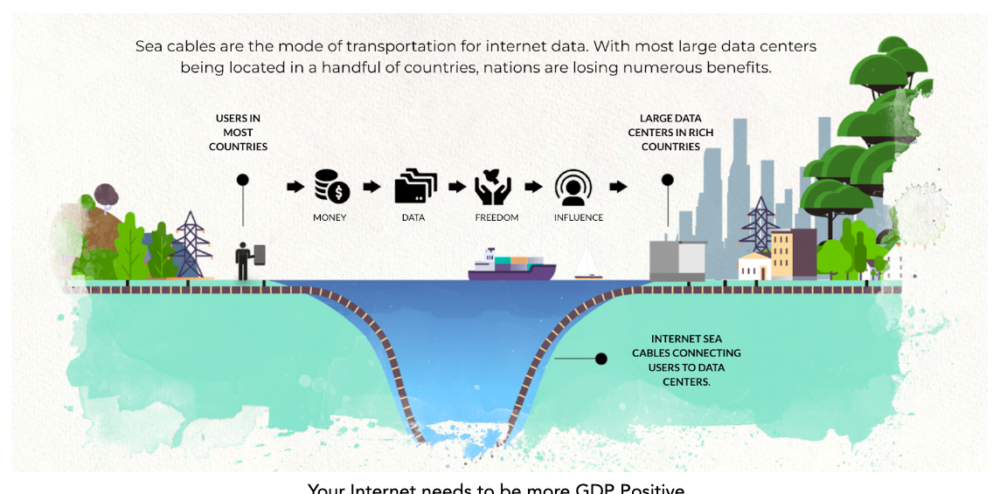

OURWORLD ZANZIBAR

We believe the world would be a better place if we would not escape into painkillers for every problem we have.
Painkillers never address the real problem. They patch something which might become worse or even harder to resolve in the future.
Albert Einstein : "Insanity is doing the same thing over and over again and expecting different results."

We believe Zanzibar has a unique chance to build a future based on digital possibilities where the root of the issues are being addressed by using systems which rething the way how things can be done. Personally we would like to help Zanzibar to make its dreams come happen.
Together With The Zanzibar Government we want to deliver:
- Provider Digital Nomads
- Provide technology and licenses to resident and non-resident digital nomads
- The government owns a part of the company who executes on this activity.
- Provider Fintech
- Provide technology and licenses in 1 package for any company who wants to provide financial services
- The government owns a part of the company who executes on this activity.
- OurTown Registrar
- Register Corprate & Personal Licenses/Visa's/Workpermits in collaboration with Zanzibar Government.
- Audit all revenue streams, make sure goverment receives all required tax & licenses.
- Manage identity of OurTown Citizens.
BRAVE NEW DIGITAL ZANZIBAR IMAGINED !!!
Zanzibar can be one of the first movers of a digital revolution where everyone becomes the center of their digital life.

This would have incredible benefits:
- National education would improve
- National health would improve
- Leadership would be recognised for vision and execution capability
- OurTown residents would be proud & delighted to be part of a beautiful Zanzibar ready for the future
- National GDP would go up
- Security would increase
Rather than implementing all as a painkiller approach (see here), why not go to the root and build a new digital backbone which is done in such a way it resolves the majority of requirements for a country's digital transformation.
Imagine if the Zanzibar government can
- Ensure every relevant party and all assets are documented & authenticated in one national digital system:
- People: Identity for each OurTown Resident (peer reviewed, with KYC/AML integration if needed)
- Land: Land registry available to everyone where no-one can alter the information if they are not following the right processes and verification steps. Integrated with ultra reliable augmented reality and GPS systems.
- Companies: Universal company registration with all relevant information available in a unified way. Data super well protected and only modifiable with well-defined processes.
- Products: Records of every container coming in & out of the country with contents, purpose, parties involved, …
- Allow every OurTown Resident (company or person) to send money to each other in the most transparent way (needs help from mainland):
- Free of charge for non commercial transactions
- Supports offline transactions where either one or zero parties involved are connected to the internet
- Can even function where there is no (or limited) electricity!
- Have insights on every commercial transaction which occurs in Zanzibar:
- Parties involved in the transaction (at least one needs to be commercial)
- Purpose of the transaction
- Specific information for example in a port; tax, sales of goods, …
- Allow companies in the country to save 10-30% on operational costs
- No need to pay to companies like airbnb, bookings.com, tripadvisor, …
- No need for marketing on platforms like google, facebook
- Integration & Automation: no need for complicated accounting systems, integrated tax reporting, …
- Hotels: help them get insight about their sales, which waiter does what, …
- Have all transactions and other relevant information logged in a system which cannot be corrupted:
- Information is stored on a quantum safe archive system with blockchain capabilities
- Date can never be lost, corrupted or changed; a perfect audit trail for the future
- Unlimitedly scalable
- Be at the forefront of the digital revolution and be recognized for it on a global scale.
What if Zanzibar is one of the first to make this happen.
Our idea is to implement all of this in OurTown and show that such a system can work end2end.
Aims:
- Implement a single sign-on digital authentication system usable for all of a country's digital use cases (like a digital passport) and following standards set by international organizations like world bank, african union, …
- Implement a land bank system which covers the full nation and is updated by OurTown Residents, but protected and audited by satellite and a super accurate GPS system
- Implement a super efficient TAX system where everyone participates with maximum transparency and minimum cost
- Implement Complementary Digital Currencies which OurTown Residents can use for their daily needs
- Implement an education system where every OurTown Resident can participate as a teacher and/or a student
- Implement a digital health system which can unlock primary health care for everyone at a much lower cost using means already made available by OurTown Residents (knowledge, herbs, best practices, generic medicine, …)
- Implement a new digital backbone (internet system) to support all the above with total sovereignty and security
All of this is not only possible, we have a plan for it and we can be the first ones in the world to pull it off.
Let's do it together
We have ideas how this can be implemented at lowest possible cost with maximum benefit for Zanzibar.
The basic requirements:
- All knowledge must be within the country. This will provide incredible opportunities to grow.
- All required technology (software) in the country is open source, unlimitedly usable and managed by teams in OurTown ready for the future
- All super transparent and done by OurTown, for OurTown
Painkillers are not a solution.

Currently, most countries develop their digital future by implementing many independent projects which all act as painkillers to their problems. While a painkiller might fix symptoms, it rarely solves the root issue.
A country like Tanzania (or Zanzibar) has the opportunity to leapfrog straight to a solution which is both easier to implement and solves most of its issues all at once.
This has huge benefits:
- It's much more cost effective
- It's easier and more integrated which results in many benefits for the users
- It will be safer (think about the cyber pandemic happening right now)
- It is more prepared for the future
- It's greener (such a system will use up to 100 times less energy)
Our Recipe

Together we can make this digital dream happen; we need commitment, a good plan, and most importantly, a loyal team and a strong partnership:
- A government which is committed to make this work, and be different. Some companies and individuals might not want such a huge step forward. so we need to be ready to defend the project.
- A sense of urgency, time is against us, the time is now. The world is changing; now is the best time to reach for our dreams.
- Being different and being at the forefront means we need to dare being different. We can't continue to do what everyone else is doing. It clearly isn't working! As Einstein said, “We cannot solve our problems with the same thinking we used to create them”.
- Put a structure in place from which all of this can be executed.
- Be safe, don’t take unnecessary risks, don’t run before walking, go iterative but from the ground up with a newly designed sovereign system, based not on hype but on proof.
- A solid committed team with all the necessary knowledge, drive and passion, and willing to put in their all to make it happen. We believe ThreeFold can step forward and make it happen.
OurWorld Zanzibar Company

OurWorld ZNZ is the company in which we provide following services
We want to operate with the government of Zanzibar to deliver on all requirements for above services and enter in a Public Private Partnership.
See the services as defined in this document.
OurWorld Company Services

- Provider Digital Nomads
- Provide technology and licenses to resident and non-resident digital nomads
- The government owns a part of the company who executes on this activity.
- Provider Fintech
- Provide technology and licenses in 1 package for any company who wants to provide financial services
- The government owns a part of the company who executes on this activity.
- OurTown Registrar
- Register Corprate & Personal Licenses/Visa's/Workpermits in collaboration with Zanzibar Government.
- Audit all revenue streams, make sure goverment receives all required tax & licenses.
- Manage identity of OurTown Citizens.
The Different OurWorld Projects
- OurFoundation as operated by OurWorld Zanzibar
- The legal and corporate connection with Zanzibar and the rest of the world.
- It provides all the necessary licensing and information.
- One of our targets is digital nomads and future residents of the cybercity called OurTown
- Gives the rights to OurTown to establish the CyberCity
- This requires a Public Private Partnership with the Zanzibar government.
- The Technology Partner is ThreeFold
- OurTown as operated by OurWorld Zanzibar and OurTown which will be separate company
- The project management and establishment of a sustainable clity called OurTown (or CyberCity)
- Is a 1million m2 project for stratups and technology companies
- Works under guidance of OurFoundation.
- Separate group of investors will be looked for
- The Technology Partner and Internet Provider is ThreeFold
- OurInternet as operated by ThreeFold together with ZICTIA
- Our own sovereign Internet as can be used inside OurTown but also outside based on ThreeFold
- physical internet capacity, distributed ledger.
- Deployed together with Zictia in commercial partnership (no feasibility study needs to be done for this)
Zanzibar Digital Nomads Hub

The Zanzibar Digital Nomad Business Hub model is simple, effective and compelling for everyone involved..
Each person or company can create a legal entity in the Zanzibar Digital FreeZone < 1 day.
- Onboarded with full background checks and due diligence (KYC/AML), consistent with international standards.. 100% Compliant and Secure.
- Start doing business the next day 100% of business tasks are automated.
- Simple pricing model $30-$1000 per month depending on target, person, company and it's size.
OurWorld Company = Digital Finance

OurWorld Company is the organization which collaborates with the Zanzibar government to provide financial regulatory services and technology to its customers. It is a fully automated financial framework for the self-sovereign and sustainable digital freezone bridging Africa and the rest of the world.
Our unique proposition is that we will become a license and service provider which uses twin technology to aggregate all the following features into a single, very simple, consumable package including:
- Any required licenses
- Much required technology (All infrastructure and blockchain tech)
- Third-party processing with global fiat currencies
- Auditing services & automatic tax reporting
- Facility services (office, houses for staff, ...)
All these features will be provided by and hosted on OurHub's OurLedger Blockchain, the decentralised internet infrastucture of the new cybercity.
The timing is ideal
- There is a large and fast growing international market for digital banking: The global digital banking market size was valued at $8 trillion in 2020 and is growing at a CAGR of 5% from 2021 to 2027. The E-Bank (Neo/Challenger Bank) market size was valued at USD 28.73 Billion in 2020 and is projected to reach USD 627.99 Billion by 2028, growing at a CAGR of 47.17% from 2021 to 2028.
- There are no financial systems globally that provide the KYC/AML and residency requirements of digital nomads.
- The tokenization of various assets such as precious metals, land and more represents a substantial opportunity to rapidly build an international customer base.
- The advent of peer-to-peer, autonomous financial systems provide the ideal platform for affordable, simple and efficient credit-union disbursement-platforms and remittence transactions across the world.
The Following Licenses will be provided by OurWorld Company
The following table highlights the various licences that OurWorld Company can provide and are needed to operate a fully comprehensive digital freezone.
Unique to our solution is that the tech is fully integrated for all assets of the financial solution.
All elements of the full financial suite displayed in the table will be seamlessly integrated into the Digital Twins, allowing for OurHub Members to access all those tools with ease. Moreover, the Digital Twins will provide access to important auxiliary services and information, such as financial education, tips & tricks and support networks.
OurWorld Register Services = Registrar
Is our service where we help persons and companies to get registered in OurTown.
We also monitor the OurLedger make sure all tax is collected and all money goes to government.
Companies can be resident or not.
Phase 1
- we need to indentify how to register companies using the existing systems and procedures of the Zanzibar Government
Phase 2
- we register the company and any other required documents or entities in the OurLedger (our blockchain)
- we help the Zanzibar government to use this blockchain or we report back to the government (whastever is easiest)
Our World Zanzibar Layers
Below there is an overview of how the full ecosystem is coming together.
flowchart TD
subgraph OURTOWN
direction LR
TOWN --- LIVING --- STARTUPS
end
subgraph OUREXPERIENCE
direction LR
OURVERSE --- MYTWIN --- OURSKILLS
end
subgraph OURINTERNET
direction LR
IC(Internet Capacity) --- LEDGER(Distributed Ledger) --- PM(protocol.me)
end
subgraph OURFOUNDATION
direction LR
REGULATIONS --- LICENSES --- REGISTRY
end
OURTOWN --> OUREXPERIENCE
OUREXPERIENCE -.-|OurExperiences implemented on top of OurInternet| OURINTERNET
OURINTERNET -.-|OurFoundation implemented on top of OurInternet| OURFOUNDATION
PEOPLE((Digital Nomads and <br>Zanzibar Resident <br>Community.))
GOVERNMENT((Government))
PEOPLE --> OURTOWN
OURFOUNDATION -->|TAX<br>LicenseFees| GOVERNMENT
style OURTOWN fill:##FFC300,stroke:#333,stroke-width:0px,align-text:center
style OUREXPERIENCE fill:#FDF2D3,stroke:#333,stroke-width:0px
style OURINTERNET fill:#33C7FF,stroke:#333,stroke-width:0px
style OURFOUNDATION fill:#0557E7,stroke:#333,stroke-width:0px,align-text:center
Income for Zanizbar
- TAX
- 5% for digital citizins (they don't have any link in physical zanzibar, no presence in ZNZ)
- 15% for people and companies living in OurTown (residents)
- LICENSES
- Fintech Licenses: 50-50% split with OurWorld ZNZ
- Corporate Licenses: 50-50% split with OurWorld ZNZ
- Digital Nomad, Small, Large Company
- Can be in Country or Outside
- Personal Licenses:
- For next phase only, to be defined as we go, right now we just work with government instances.
- OURWORLD ZNZ OWNERSHIP
- 20% owned by Zanzibar Goverment
we expect that this initiative can bring +500m USD of income for Zanzibar within 5 years (tax and licenses)
Ownership of OurWorld Company
Shareholding Table
- 20% Zanzibar Government (Zanzibar also gets benefits because of TAX and Licenses)
- 35% OurWorld Holding (ThreeFold is main part of this holding)
- 30% new investors (new funds coming in)
- 10% for team of OurTown (people who make it happen)
- 5% for insurance, varia (to make it work)
OurTown shares will be tokenized digitally (legalized STO) which might provide liquidity of the shares and value increase towards the future.
Public Private Partnership
According to ThreeFold's analysis in conjunction with the Government of Zanzibar's strategic objectives and financial goals, the OurWorld project is projected to deliver an inclusive strategic fintech vision in line with the ICT objectives of the government of Zanzibar through a public-private-partnership (PPP). OurWorld's scope was broadened to include:
- An international hub for digital nomads and small and medium enterprises (SMEs)
- A sustainable cybercity project
- A fully automated, self-sovereign and sustainable digital freezone also for financial licenses (phase 2)
The projects will be supported by the government of Zanzibar to guide the procurement, selection and development process of all projects involved in the realisation of that fintech vision for Zanzibar.
In partnership with the government of Zanzibar, OurWorld will advocate on behalf of the PPP to ensure the selected development teams will further the country' goals in regards to fintech, social and environmental progress.
As of Q3/Q4 2022, the planning and design of the project is on track and ThreeFold continues to serve as a partner to the government of Zanzibar, providing continuous support and attending meetings related to the vision of the country.
The suggested PPP is a Build-Own-Operate-Transfer
In this model, the government grants a franchise to a private partner to finance, design, build and operate a facility for a specified period of time. Ownership of the facility is transferred back to the public sector at the end of that period.
Our period is 33 years.
We want to design our partnership following the guidelines as described by:
Requirements
- Government support to fast track the registrations and tax requirements for the first startups prior to the completion of OurTown and OurHub.
- Government to provide +1,000,000m2 in a prime location in Zanzibar to start the OurTown project.
- Government to provide OurWorld with an initial building in StoneTown close to the Mbwuini Ruins where OurWorld started it's operations already.
- Partnership with Zanzibar ICT Infrastructures Agency (ZICTIA) to build the decentralized, self-sovereign digital backbone infrastructure. We will work together as partners on all ICT-related projects that we undertake in Zanzibar.
Digital Nomads and Corporate Licences
Highlights of service
- establishments of companies in a sandbox (OurTown) in most automated way
- full TAX revenue collection done in automatic way in collaboration with Zanzibar authorities
- registration automated as much as possible
- operate our OurLedger Blockchain
- audit the parties (using the OurLedger capabilities)
- promotion to attract digital startups/residents and provide value that way for TNZ
- do expositions and organze events to show how the OurTown/OurHub model works.
Pricing (suggested pricing)
-
for non residents
- 180 USD per digital nomal per year (or comparable small company)
- 500 USD per medium sized company per year
- 1000 USD for larger companies per year
-
for residents (companies operate also in ZNZ)
- pricing TBD...
- this will not be done at start, this is for H2 2023 after more research
-
The above mentioned fees contain
- license fee (as to be agreed with government), we split the license fee 50-50 with government
- technology and hosting fee (digital twin, compute & storage capacity, security offering)
- support and service fee (helpdesk, allow people to onboard, ...)
Government main income components is tax on top of the license fees.
Important Milestones
Milestone 1
- Sign PPP agreement which gives right to OurWorld Company to execute on this business model in line to requirements.
- OurWorld Company will finalize on funding round once PPP Agreement signed.
- OurWorld Company execute on regulatory work and prepare all required digital sandbox regulatory and other agreements for digital nomads (should be easy under a sandbox license).
- OurWorld Company will formalize all required licenses and agreements with Zanzibar Government.
- OurWorld Company will formalize website, commercial documents for digital nomad usecase
Milestone 2
- Technology and operations system is active and usable.
- Digital nomads are being onboarded, Zanzibar is now officially an operational a global digital nomad zone
Milestone 3
- OurWorld Company execute on regulatory work and prepare all required regulatory and other agreements for any establishment of companies in Cybercity Zanzibar (under a sandbox license)
- Enable onboarding of resident companies this will require additional work
- Automation of the workpermits, company and resident registration system on the OurLedger Blockchain
- Aim is to allow new residents to be registered < 1 week
- Each new resident gets checked (fraud, ...): cost +-1000 USD for normal person
- Need to see how to integrate with ZNZ existing system
Responsibilities
| 4OurWorld/ThreeFold | Zanzibar Government |
|---|---|
| create and deliver the technical system as required for OurHub functions like registration, money collection | recognize digital signatures and blockchain company ownership |
| make sure required funds are found to realize this project, we start small in Mbweni Ruins still in 2022 | give OurWorld Company Strategic Investment Status. Tax Free Status for 5 years to import goods as well as income tax exemption. |
| deploy systems and operationally run the OurLedger Blockchain system | endorsement of OurLedger Blockchain Functions (tax collection, identity, electronic signatures ...) |
| Realize timing: preparation work 2022, first nomads found in H1 2023 | finalize the required paper work as soon as possible to allow us to get started in H1 2023. |
| Collaborate on Global Promotion for the concept and attract investors and likeminded companies in ZNZ | collaborate on Global Promotion for the concept and attract investors and likeminded companies in ZNZ |
| make sure that the OurLedger automatically collects all tax | approval of tax structure as identified in this document, tax is collected in digital way through OurLedger and once a month send to government using real TSH. |
| integrate blockchain functions for OurHub with Digital Systems of ZNZ for residency, company registration, ... | allow us to establish integration with ZNZ backend together with Softnet, if we want to allow many thousands of digital nomads to come we will have to automate. |
Timeline
- summer 2022, initial team on the ground (done)
- summer 2022, first OurWorld location (innovation center & first startup location) (done)
- mid october 2022, initial feasibility study completed (almost done)
- october 2022, sign agreement between ZNZ Government & 4OurWorld (initial organization in Zanzibar) & ThreeFold SA
- Q1 2023, OurLedger Blockchain operational and running in ZNZ !
- H2 2023, first digital nomads can register and get their digital presence here in ZNZ
- H1 2024, +10.000 digital nomads activated
Financial Licenses
highlights of service
- provide digital financial licenses as defined in our overview to the world.
- operate our OurLedger Blockchain for the financial services
- audit the parties (using the OurLedger capabilities)
- help the detection of crimimal or other unregular activities if that would happen
- be a global recognized example of how a fintech environment can be build in a sandbox (OurTown)
- promotion to attract fintech startups into OurTown and provide huge promotion value that way for TNZ
- do expositions and organze events to show how the OurWorld Company/OurHub/OurTown model works
Pricing
see this table
The fees will be split between OurWorld Company (60%) and Zanzibar Government (40%). Please note OurWorld Company is also 20% owned by Zanzibar Government.
Important Milestones
Milestone 1
- Sign PPP agreement which gives right to OurWorld Company to execute on this business model in line to requirements.
- OurWorld Company will finalize on funding round once PPP Agreement signed.
- OurWorld Company execute on regulatory work and prepare all required digital freezone regulatory and other agreements.
- OurWorld Company will formalize all required licenses and agreements with Zanzibar and Tanzania government instances.
Milestone 2
- OurWorld Company will formalize website, commercial documents as well as investment round material
- OurWorld Company will do 2nd fundraise as capital increase to allow more fuel for executing on the business model.
- OurWorld Company will start executing on the commercial opportunity.
Milestone 3
- First couple of financial customers onboarded, model proven, Zanzibar is now officially an operational fintech digital zone in the world.
Responsibilities
| OurHub/4OurWorld/ThreeFold | Zanzibar Government |
|---|---|
| finish feasibility study | sign agreements for collaboration |
| make sure required funds are found to realize this project, we start small in Mbweni Ruins still in 2022 | give OurWorld Company Strategic Investment Status. Tax Free Status for 5 years to import goods as well as income tax exemption. |
| Prepare all legal docs to create a financial center like this (is huge effort, we have the people for it) | help to communicate with CB and get approvals done for the legal documents |
| Research to make sure that all legal docs are 100% compliant with global standards | |
| TO BE COMPLETED | |
Timeline
- summer 2022, initial team on the ground (done)
- summer 2022, first OurWorld location (innovation center & first startup location) (done)
- september 2022, feasibility study completed (almost done)
- october 2022, sign agreement between ZNZ Government & 4OurWorld (initial organization in Zanzibar) & ThreeFold SA
- Q1 2023, OurLedger Blockchain operational and running in ZNZ !
- H2 2023, legal documentation in order (all legal docs written ready to be submitted to CB TNZ)
- to be further defined ...
OurTown
highlights of service
- (re)sell of homes or commercial properties (not as straight property, is through tokenized structure)
- rental of homes/commercial property (offices, resto, ...)
- deliver all required commodities for a small city (electricity, water, some local food production to demonstrate, telecom, ...)
- operate the OurLedger = OurLedger Blockchain
- be a global recognized example of how a digital community based can be run on larger scale by using digital tools
- promotion to attract startups into OurTown and provide value that way for TNZ
- do expositions and organze events to show how the OurTown model works and provides prosperity for government as well as citizens.
Once all of this is proven and is working on larger scale we can consider to roll our parts of this model e.g. OurLedger to rest of Zanzibar with ofcourse 100% collaboration of government.
Partnership model
- the land is separated in common area's (owned by OurTown e.g. for rentals) or as owned (fractional by members)
- all land is registered in OurLedger Blockchain and serves as example how land and property can be managed
- for land as owned by citizens of OurTown
- 2000 USD per hectare (10.000m2) per year, only once used & sold
- all is registered in OurLedger Blockchain
- for land as owned by OurTown
- 15% of all rent -> ZNZ (offices as well as residential) and utilities
- all is registered in OurLedger Blockchain
- VAT of 15% on services & goods
- for all goods & services sold in OurTown Locations
- all is registered on OurLedger Blockchain and serves as example how Revenue Collection can be automated.
- this allows for incredible automation & transparancy
all money is collected digitally on the OurLedger and transfered to ZNZ once a month, ZNZ can at any point in time audit the OurLedger and has full insight in all information on OurLedger, nice reporting tools will be created to give good insight to ZNZ government.
Important Milestones
Milestone 1
- Sign PPP agreement which gives right to OurWorld Company to execute on this business model in line to requirements (also approve tax status).
- OurWorld Company will give rights to OurTown company to build, commercialize and operate OurTown = the CyberCity
- OurWorld Company will establish a temporary location in OurTown Cybercity which will already act as Digital FreeZone for Zanzibar for the Digital Nomads (alternative we can select and dedicate another building in ZNZ)
Milestone 2
- OurTown Company will start selling units for cybercity (OurTown) and asking for pre-payments
- OurTown Company will formalize website, commercial documents as well as investment round material
- OurTown Company will finalize on funding round
- OurTown Company will start building
Milestone 3
- OurTown Company will deliver phase 1 of the project
- First residents can come in.
- OurTown Company will start operating OurTown
Milestone 4+++
- Other regions are delivered as residents come in.
Responsibilities
| OurHub/4OurWorld/ThreeFold | Zanzibar Government |
|---|---|
| create and deliver the technical system as required for OurTown functions like digital ownership | recognize tokenized ownership (through blockchain) of property, resell of homes has no tax implication. |
| make sure that the OurLedger (OurLedger Blockchain) automatically collects all tax | approval of tax structure as identified in this document, tax is collected in digital way through OurLedger and once a month send to government using real TSH. |
| make sure required funds are found to realize this project, we start small in Mbweni Ruins still in 2022 | give OurTown Strategic Investment Status |
| deploy systems and operationally run the OurLedger Blockchain system | endorsement of OurLedger Blockchain Functions (tax collection, identity, ...) |
| Deploy local fiber network in OurTown | Give OurTown license to run local 4G network (for telco frequency) in OurTown area. |
| Start implementing the concept still in 2022 in Mbweni Ruins. | The full OurTown concept is extended to some well defined locations, the starting one is Mbweni Ruins location (today called Jungle Paradise) to allow us to start faster with the full concept. |
| The OurLedger Blockchain will do automatic VAT Revenue Collection on all goods and services sold of 15% (unless if service is tax free) | Tax Free Status for 5 years to import goods into OurTown Locations (e.g. Mbweni Ruins to start with) |
| Collaborate on Global Promotion for the concept and attract investors and likeminded companies in ZNZ | Collaborate on Global Promotion for the concept and attract investors and likeminded companies in ZNZ |
| Realize timing: preparation work 2022, all parties identified and up and running H1 2023, 60% of project sold by end 2023 | Finalize the required paper work as soon as possible to allow us to get started in 2022. |
| Find best possible sustainable architect and project developer (we have already some friends to execute but need to formalize) | Help us to create the company OurTown and award the land to it in 2022. |
| Grown presence through startup company 4OurWorld in ZNZ, is our startup facility. | Would be best to also have Strategic Investment Status for 4OurWorld and Tax Incentives to make it easier for us to get started |
Timeline
- summer 2022, initial team on the ground (done)
- summer 2022, first OurWorld location (innovation center & first startup location of OurTown) (done)
- september 2022, first OurWorld farm location (small farm of 1 hectare, Bambi), through our company 4OurWorld (done)
- september 2022, feasibility study completed (almost done)
- october 2022, sign agreement between ZNZ Government & 4OurWorld (initial organization in Zanzibar) & ThreeFold SA
- october 2022, take over Mbweni Ruins from current owner through 4OurWorld, get tax status in order for at least 5 years, to help us to get started
- december 2022, OurTown company created in ZNZ and all paperwork in order
- Q1 2023, initial VR model (metaverse) for city available
- Q1 2023, OurLedger Blockchain operational and running in ZNZ !
- Q1 2023, initial registration of interest on the OurLedger Blockchain with money (reservation fee of e.g. 50k USD)
- Q1 2023, all paperwork and necessary permits in order from ZNZ for OurTown
- Q1 2023, selection done of promotor and project developer for OurTown
- Q2 2023, result of contest for architecture of project, selection of Architects for project, will be a global community event with promotion
- Q2 2023, first 50 properties sold
- Q2 2023, feasibility study for Pemba development (needs to be larger), depends on success of ZNZ OurTown Project
- Q2 2023, large scale commercial event to promote the idea on global scale (2 locations, includes Pemba)
- Q3 2023, complete VR model (metaverse) for OurTown available (Pemba and ZNZ)
- Q4 2023, 50% sold of project or reserved for rental (whatever comes first)
- Q4 2023, initial residents move in (small scale developments done to get started to house initial team) is optional
- Q3 2023, bigger works start
- Q4 2024, opening of the project, we are active with tech and location operational (probably not all land yet, to be defined)
Zanzibar Benefits

OurTown
- The project will deploy a digital backbone on the island that will serve as the infrastructural layer for an ICT hub - a center for IT and tourism in the sub saharan region, setting policies and regulations that will grant birth for hundreds of SMEs and economic sustainability and continuity for every government sector of the country.
- OurTown provides the ideal platform to host startups and technologies that will work hand in hand with the government and local companies to develop digital solutions for each government sector in a view to digitize public services at scale.
OurHub
- Position Zanzibar as one of the first digital nomad business hub in Africa.
- OurHub will be the launchpad of more sustainable projects that can turn Zanzibar into a self-sovereign, sustainable and progressive hub for digital nomads and entrepreneurs while preserving the culture, authenticity and well being of the country.
- Potential to attract thousands of companies to relocate sustainable to Zanzibar within a few years.
Note: A global objective analysis in perceived prime locations in the past two decades shows that prime locations tend to shift from one domicile to another for the failure of these domiciles to capture and anchor visitors, tourists, people with interest for the lack of strategic projects that grants continuity and engagement. OurHub presents an incredible opportunity for Zanzibar to become a sustainable prime location.
OurWorld Company
- OurWorld Company will create revenue for the government of Zanzibar in the form of licence costs and taxes, supporting Zanzibar's objective to grow the country's GDP and FDI.
- The regulatory framework provided by OurWorld Company will position Zanzibar as a leader within the “Digital Transformation of Africa Strategy (2020-2030)” of the African Union, being the first unified platform that places the sovereignty and independence of Tanzania at the forefront of its operations.
- Through a simple yet effective regulatory approach, OurWorld Company will be in a unique position to attract international financial experts to further develop Zanzibar's financial frameworks and ease-of-doing business.
OurSource = Incubator
- OurSource will bring the technology, investments and know how to support the government of Zanzibar in it's digital inclusion and skills development vision.
- OurSource will have the necessary technologies and know how to launch projects that will tackle the inclusion of SMEs via the creation of E-Commerce platforms and Banking solutions to scale digital inclusion of citizens and SMEs.
MyTwin
- Through MyTwin, OurWorld will be equipped with the technology required to bridge the digital divide in Tanzania and the region, providing communication, education and up-skilling capabilities in line with programs such as the “ Online Digital Skills for All Program”.
Digital Nomads Benefits

Benefits for Zanzibar
Zanzibar is beautiful and that quality needs to be preserved; getting other sustainable sources of income can help that process.
Zanzibar OurHub will be a sustainable business & incubation center.
100% sustainable, with zero damage to the local environment, culture or economy.
The revenue generated from the Zanzibar Digital FreeZone can be used for:
- Promotion & growth of the Digital Freezone
- Incubation of more projects, which creates value for the Digital Freezone.
- Development of sustainability projects.
- Support of local community around the Digital Freezone
- Government functions
High Tech In Zanzibar
World class IT systems will provide: data sovereignty, transparent reporting, productivity tools and a conscious tech hub.
Healthy Tourism = for digital nomads
A certain percentage of the digital nomads will spend some time in Zanzibar, this leads to secondary benefits for Zanzibar (Tourism).
Modern Sustainable Physical FreeZone location for digital nomads
See OurTown section (cybercity)
Benefits for Digital Nomads
Zero Complexity
Our unique digital twin IT system allows a digital nomad to simplify his personal business life.
Quality of Life
Within OurHub, nomads will have the following capabilities:
- Communication (messaging, email, video conferencing)
- Invoicing, Expenses, Accounting and other administrative tasks
- Data Storage (all data is stored securely online)
- Contract management with employers, business partners and service providers
- HR relations
- Personal and collaborative project management
- Digital currency wallet
Every task is 100% automated and peer-to-peer with business counterparts, requiring no manual action. For example, invoices are generated and sent digitally and securely (and permanently recorded on a blockchain).ß
Preparation for an unsure future
Whatever might happen in the nomad’s homeland, their company and assets are safe and secure in a well-regulated online environment. New capabilities will be added over time as OurHub expands organically and its growth potential is clear.
In particular, as the use of token-based currency models (security tokens, utility tokens, digital currencies) grows, OurHub will provide this capability for its communities.
Prepare for the future, digital tokens will become increasingly important.
Convenience and Collaboration: Multiplying efforts, not adding them
Find like-minded innovative partners, collaborate to build bigger projects with least effort and maximum protection. Attract like-minded entrepreneurs in Zanzibar.
Together create a better world. Zanzibar can be the home for a digital ecosystem of like minded digital nomad entrepreneurs. Use powerful collaborative Ourworld tools all hosted in Zanzibar.
For The Planet
We maintain a strong set of values to make sure that we do our business to the utmost ethical standards.

The timing is perfect.

The pandemic was the ultimate resilience test for the banking industry at large. The global financial system is experiencing unprecedented growth in digitization, convergence of industries and ecosystems, and more. The explosion of the digital asset market is transforming financial architectures and will have a revolutionary impact on how money is created, transferred, stored and owned.
The efforts from governments to flood markets with cash in the aftermath of the COVID-19 pandemic has proved a double-edged sword for banks by propping up borrowers but leaving institutions flooded with excess cash. Banks and countries are entering a technology trap by approaching their digital transformation in an incremental, fragmented and localized way, preventing them from achieving their fullest potential. These trends are pushing banking leaders to redefine the workspace.
Bank executives have a clear opportunity to lead in a more authentic and differentiated way that embraces a higher purpose. Many banks are yet to prioritize their commitments to environmental, social and governance (ESG) concerns, having the power to impact climate change and financial inclusion. Now, more than ever, banks should be bold and aggressive in orchestrating change at a pace and scale that will drive results. The window for decisive action is closing soon.
Planet Positive and People First
We can’t predict what the next great disruption in the world of finance will be, but we can prepare to handle the emerging trends as well as possible by building a foundation of resiliency and agility. Digital transformation is a necessity.
Planet Positive and People First means:
- Fully automated finances ((accuonts payable, reconciliation, expense management, etc) saves time and energy.
- Resource-efficient and cost-efficiency platform leads to less interest, fees and even discounts as payments are made seamlessly to vendors.
- Elimination of human error and security issues through automation.
- More scalability and heavy lifting possibilities thanks to automation.
- Customers access a range of ESG investment (land, carbon, precious metals, etc.) will be provided as a way to improve yield in a way that respects our planet and communities.
- Supports UNGC goals for 2030.
Business Model
This PPP has good predicted returns for Zanzibar and its government.
See Expected Income In This Document
On next pages you can see detailed calculations of margins and possible revenue streams.
Business Model Corporate Licenses for OurWorld ZNZ
As given from our Foundational Layer.
Projected revenue streams per market category in USD

Projected income model for OurHub in USD

Projected additional income for Zanzibar in USD

OurHub can add 6 Billion USD to Zanzibar's GDP and increase the country's income by +600,000,000 USD within 6-7 years!
Business Model FinTech Licenses for OurWorld ZNZ
As given from our Foundational Layer.
TODO: (na) Explain what this means and give unit

Resulting project income stream for OurWorld Company

Feasibility

OurWorld is carrying a feasibility study to validate the viability of the project. The feasibility study will outline crucial factors to the project mentioned below to ensure the success of the project.
- Financial Feasibility = is the project profitable for all parties involved
- Legal Fintech Feasibility = is it realistic what we want to do from a fintech regulatory perspective
- Operational Feasibility
- Technical Feasibility
TODO: (sacha) (ali) who can help here, how to do this, needs to go faster, lets come up with strategy, we can go in iterations
TODO: (sacha) initial quick content, everything we can do by thursday noon, so we have a full package
market
Market Size
Digital transformation used to be something that’s just good to have. But since COVID-19 disrupted business operations worldwide, many organizations now see digital transformation as a necessary step in preserving their business as reflected by the most current digital transformation statistics. Fueled by speedy internet everywhere, digitization now plays a critical role in adding business value.

The global Fintech industry is growing at an exponential rate:
- The global fintech market is estimated to be worth $131.95 billion
- The fintech space is set to surpass $400 billion by 2027
- The fintech market is growing at a CAGR of 25.18%
- Over 26,000 fintech startups were launched last year
- In total, an estimated $8.49 trillion of digital payments will be made in 2022
- The global digital banking market size was valued at $8 trillion in 2020 and is growing at a CAGR of 5% from 2021 to 2027

By 2026, this fintech industry is projected to grow to $324 billion at a compound annual growth rate (CAGR) of 25.18%.
There are several key factors behind the continued rapid growth within the fintech space. Advancing automation tech and an ever-growing array of online and app-based services are perhaps the most important factor driving fintech’s growth. Improved accessibility and reduced costs mean fintech solutions are more readily available to would-be consumers.
In addition, lenient regulations in the space and changing consumer demands/expectations have further boosted the market.

The E-Bank (Neo/Challenger Bank) market size was valued at USD 28.73 Billion in 2020 and is projected to reach USD 627.99 Billion by 2028, growing at a CAGR of 47.17% from 2021 to 2028.1
An estimated $8.49 trillion of digital payments will be processed globally during the course of this year. Increasing at a CAGR of 12.31% until 2027.
Some global statistics:
- The global digital transformation market is projected to grow from $469.8 billion in 2020 to $1 trillion by 2025, at a compound annual growth rate (CAGR) of 16.5% during this period (Research&Markets, 2020).
- Digitally transformed organizations are projected to contribute to more than half of the global gross domestic product (GDP) by 2023, accounting for $53.3 trillion (IDC, 2020).
- 65% of the world’s GDP is predicted to be digitized by 2022 (IMF, 2020).
- 70% of organizations have a digital transformation strategy or are working on one (PTC, 2019).
- Industrial enterprises are seen to have benefited the most from digital transformations (PTC, 2019).
- 55% of startups have already adopted a digital business strategy (IDC, 2018).
- 38% of traditional businesses have adopted a digital business strategy (IDC, 2018).
- 89% of enterprises are planning to adopt or have already adopted a digital business strategy (IDC, 2018).
- Top digital business strategy adopters include services (95%), financial services (93%), and healthcare (92%) (IDC, 2018).
- 39% of executives expect to benefit from their digital transformation initiatives in 3 to 5 years (Fortinet, 2018).
- 21% of North American and European enterprises say their digital transformation is done (Forrester, 2018).
Digital Nomads are a big market

10,900,000 Digital Nomads from the US in 2020.
Over the past three years, Emergent Research and MBO Partners have collaborated on an extensive digital nomad study. We found that the number of Americans describing themselves as digital nomads rose from 7.3 million in 2019 to 10.9 million in 2020 — an increase of 49%. And the composition of this cohort shifted. In previous years, the ranks of digital nomads were dominated by independent workers: freelancers, independent contractors, and the self-employed. But the 2020 nomad surge was driven by people with traditional jobs. Untethered from their offices, many employees decided to take to the road. In fact, the number of digital nomads with traditional jobs rose from 3.2 million in 2019 to 6.3 million in 2020 — a 96% increase. Traditional job holders now make up a majority of those pursuing this nontraditional work lifestyle.
Some Global Statistics:
-
There are over 35,000,000 digital nomads across the globe of varied nationalities.
-
The global digital nomad community’s economic value is $787 billion per year, calculated as the aggregate of digital nomad spending annually.
-
If the global digital nomad community were a country, it would rank #41 by population size, just after Canada (37,742,154) and Morocco (36,910,560).
-
If the global digital nomad community were a country, it would be the 38th most prosperous country based on gross national income per capita, ranking just after Portugal ($23,200 average annual income per person) and Saudi Arabia ($22,840 average annual income per person)
-
The average digital nomad has a higher monthly budget than the average income of citizens from the top 5 countries.
TODO: (na) complete above.
Do you want more statistics? https://abrotherabroad.com/digital-nomad-statistics/
As such, taxes were reported as one of the major struggles for digital nomads.
TODO: (na) Should I move this to the why section?
Regulatory
TODO: (na) show how we are doing +- the same as in other jurisdictions, make comparisons, point to their info
TODO: (sacha) (ali) who can help, how can we get to the info
Regulatory
The development of a FinTech-conducive regulatory and supervisory ecosystem as well as fostering innovation in Zanzibar's financial system is one of the main focuses of OurWorld. Together with other state authorities, OurWorld aims at creating a FinTech-friendly environment able to attract companies and encourage them to incubate new products in the country.
Lithuania as an example
- E-money, payment institution licences are valid acroos EU and globally and can be issued within 6 months
- AML/CFT centre dedicated to fighting money laundering and terrorit financing by bringing together the efforts of both state institutions and market participants
- Regulatory sandbox environment allows potential and existing financial market participants to test financial innovations ina real-life environment under the guidance and supervision of the Bank of Lithuania.
- Crowdfunding platform operators benefit from choosing Lithuania as a gateway to access the European market under the new EU regulations
- CENTROlink is a unique payment system operated by the Bank of Lthuania that provides technical access for all types of payment service providers licenses with Eureopean Economic Area (EEA) enabling them to send and receive Single Euro Payments Area (SEPA) payments and issue IBAN accounts.
see: https://investlithuania.com/tech/fintech/
OurWorld Zanzibar
- E-money, payment institution licences are valid across the Africa Union, SADEC and COMESA and can be issued within a few months
- AML/CFT centre dedicated to fighting money laundering and terrorist financing by bringing together the efforts of both state institutions and market participants
- Regulatory sandbox environment allows potential and existing financial market participants to test financial innovations ina real-life environment under the guidance and supervision of the Bank of Lithuania.
- Crowdfunding platform operators benefit from choosing OurWorld Zanzibar as a gateway to access global markets.
- OurFoundation is a unique fintech environment operated by OurWorld Zanzibar that provides regulated access to all types of fintech licenses enabling them to send and receive fiat and digital payments and issue IBAN accounts through the People's Bank of Zanzibar
Operational
TODO: (sacha) describe how we will do it to manage this project (outsource for architecture, development of houses, how there is much automation)
An experienced team is involved in this project, see Team Experience)
Financial
See Business model as calculated in:
There is a good financial model behind both activities.
For Zanzibar there is much more income projected see:
Technology feasibility
Team Experience
ThreeFold has an experienced team which can help to realize the goals of this project:
Our incubator (Incubaid) has founded several technology startups.
 .
.
ThreeFold Technology
ThreeFold has created a more decentralized technology stack. We believe that more decentralized systems have the ability to bring more security, scale and are more positive for people and the planet.
The ThreeFold Technology stack is operational:
- Capacity Generators: a (secure and autonomous) operating system that does not rely on people to operate and maintain it. This operating system has simple and secure primitives that it can execute. It can run on most computers and servers and is very secure.
- Workload Orchestration: instead of using people (system administrators) use blockchains and smart contracts to start and stop applications and create and manage storage solutions. This lowers the dependency in people and creates security, reliability, scalability and efficiency.
- Data Transport: a networking protocol that connects it all in a more reliable and secure way. It enables compute and storage capacity generators to be created everywhere and not just in well connected and serviced locations like datacenters. Build a local, sovereign internet based on homes, schools, universities and company or government buildings.
Proof of concept active in our Internet of Internets Approach
The current mainnet is a global network of Internet capacity generators and spans 60+ countries.

Planning forward the expansion model of the Internet of Internets is to have countries, tribes and regions take ownership of local capacity generation, workload orchestration and data transport.
Compute, Storage and Network (IT capacity) generation is the starting point for a new capable digital backbone system which can be used for any future digital workload.
Capacity generation can be done in any location that has reliable power and network infrastructure.
- homes
- community centers
- schools
- city halls
- market places
- commercial buildings
- office buildings
- government buildings
The better the electricity and network reliability in a location, the better suited they are to create capacity (network, compute and storage).
In places where there is no infrastructure yet an edge datacenter can be created:

Tax Feasability
The setup of an attractive regulatory framework will be key to harness the development of OurWorld and attract international investors and SMEs.
see: http://ark.co.tz/wp-content/uploads/2020/12/Tax-guide-in-Zanzibar-Oct-2020.pdf for the Zanzibar tax guide.
Real estate investors should be able to acquire a residency permit as an investor, meaning the party will be allowed to live in Zanzibar as a non-citizen. They are also not required to live in Zanzibar permanently.
New tax and residency benefits for real estate buyers:
- No Income tax on worldwide income and wealth
- Resident permit for VILLA buyer plus Partner and up to four children under 20 years of age
- First buyer pays only 50% of normal capital gains on sale of unit, at 5% instead of 10%
- Foreign ownership allowed
- Registration of ownership to be done by Zanzibar Investment Promotion Authority (ZIPA)
- No VAT on unit rental or sales
- Income tax is halved only on local income- 15% instead of 30%(applicable to foreigners only)
- No tax on repatriation of funds/profit
- Residence permitsare only valid for the duration the buyer owns the property (renewable everytwo years at $3050 for the main investor and $550 for each dependent)
- No work permitis given, but may be applied for separately by the employer
- No minimum stay is required to claim benefits
- Business investors wanting to invest in venturessuch as restaurants, bars, watersports and retail operations will receive similar benefits as real estate investors through approved “Strategic Investment” projects only.
New tax and residency benefits for business investors:
- Foreign ownership is allowed
- No business licence fees for the first three months
- Company tax: Income tax free for first five years. After the first five years: 50%(Income Tax is 30% so it will onlybe 15%)
- Repatriation of profit allowed after tax
- 100% exemption on withholding tax on interest paid to foreign banks
- Deduction of depreciation rate of 100% within five years
- Residence and work permits for investor and employees.
TODO: (na) refer to acts as found in ZNZ which show that the tax we ask for is doable and has already been done (sacha)
EXPERIENCE
OUR PREVIOUS SUCCESSES
 .
.
Some of our Technology Achievements
3 World Records for Web Hosting (1997-2002)
Our team launched the internet hosting and datacenter business in Europe. It's fair to say that we were at the beginning of the internet's enormous growth at that time. We hosted the largest websites in the world during this period. UEFA, Nasa, World Cup.Numerous times we demonstrated how to achieve super scale while staying sustainable.
The first Backup Data Deduplication system in the world (2005)
Upto 100x benefit compared to the status quo in data centers at that point. We showed how our customers could back up full data centers with 100x less energy and storage utilization.
This product still lives on in all Symantec backup products. This was a highly innovative solution, there was nothing like it at the time as. It facilitated the move away from tape to disk based backup systems.
The first cloud system in the world (2008)
We formed one of the key innovation groups in the field of cloud computing. Concepts like Virtual Private Datacenter were invented by us. We were one of the main sources of inspiration for companies like VMWare for their cloud strategy. We became the core of SUN microsystem, and the inspiration behind Sun’s ambition to become the largest player in the cloud industry. This didn’t happen in the end because Oracle bought SUN and buried all Sun’s cloud computing projects.
The first always consistent database in the world (2010)
This was a major technological achievement, we pioneered and developed the method to store data in a database over multiple sites in such a way that data could never be lost, corrupted or order of updates changed. Consistency was key. This database was called Arakoon and served as inspiration for further database projects. This fact is little known but is especially relevant today.
The first unbreakable and distributed storage system in the world (2012)
We invented a way to store petabytes of information in such a way that no-one can hack it, and the data can never be corrupted.
This system was 10x more energy efficient compared to any alternative. This led to our biggest exit to date. Even today there are barely any storage systems which can compete with our approach and solutions that were developed at that time.
The first proof of block stake blockchain in the world (2017)
We developed the first blockchain which was not using proof of work to battle the energy usage which went with proof of work blockchains. We have used this system for the last 4 years. Today many blockchains have evolved in this direction.
The first peer2peer cloud in the world (now)
Probably our biggest achievement to date. A real carbon removing, sovereign peer2peer cloud.This system is being deployed and evolved in one of our scale out startups called ThreeFold.
The benefits of this system are huge. We had to write an operating system from scratch (re-using linux kernel), a new blockchain provisioning layer as well as the most reliable and sustainable storage system in the world. This system has now been deployed in many locations. More than 40m USD has been invested by founders and friends to make this possible.
Technical Architecture
Smart City Backbone
ThreeFold has developed a capable system which can be used to streamline the way in which we deal with the core services like identity, license approval, company creation, tax registration.
A strong blockchain based backbone is available to host all required services.
Requirements
- Data can never be lost.
- Every transaction is logged in a blockchain and available to the auditing modules.
- Consensus needs to be achieved between all parties for relevant transactions
- Strong identity is a must, see that section for more info.
High Level Architecture for the Backbone
graph TB
User[User Web Browser] --> Explorers
User --> ConsensusEngine1
User --> money_blockchain
subgraph Auditing[Audit Monitor Cluster]
Monitor[Monitoring]
Monitor --> Audit[Auditing]
Monitor --> Reporting[Reporting]
end
subgraph Digital Currency Ecosystem
OracleEngine[Oracle For Pricing Digital Currencies] --> Exch2[Financial Institute A]
OracleEngine --> Exch3[Financial Institute B]
OracleEngine --> Exch1[Digital Currency Exchange]
end
subgraph TFChainNode1[ThreeFold Blockchain Node]
Explorers[Blockchain Explorer] --- TFGridDB[Blockchain DB]
Explorers --> Validator[Validator Node]
ConsensusEngine1[Consensus Engine] -->Validator
ConsensusEngine1 --> TFGridDB
ConsensusEngine1 --> money_blockchain[Money Blockchain]
ConsensusEngine1 --> ReputationEngine[Reputation Engine]
ReputationEngine --> Monitor
Validator --> Monitor
ConsensusEngine1 --> OracleEngine
end
The system above is very scalable and can deliver any of the required business and government flows.
Identity System
A user connects to our Identity management system using a web or mobile client.
- The user submits identity which gets stored in the blockchain system.
- The user will submit documents to the system
- The system will process the documents and use multiple identity verification systems to verify identity.
- Once every year the identity will be verified again against a AML = Anti Money Laudry list provider, to see that in mean time the user did not get black or gray listed.
- Once proof of authenticity and verification is positive, the proof is attached cryptographically to the user entry in the database. This allows all future systems to recognize that this user is ok to work with.
Requirements
- No User will ever be allowed to do business unless proof of authenticity and identity succeeded
- No-one will be allowed to operate anonymously.
- All transactions as done for any operation by user is logged in the blockchain and connected to the monitoring system.
Architecture
graph TB
User --- WS
subgraph Auditing[Audit Monitor Cluster]
Monitor[Monitoring]
Monitor --> Audit[Auditing]
Monitor --> Reporting[Reporting]
end
subgraph BC[ThreeFold Blockchain]
Validator6 ---|upto 99 validators| Validator1
Validator1 --- Validator2
Validator2 --- Validator3
Validator3 --- Validator4
Validator4 --- Validator5
Validator5 --- Validator6
end
subgraph IV[Identity Verification]
KYC1[KYC/AML Provider 1]
KYC2[KYC/AML Provider 1]
P2P[Peer Review, Proof of Authenticity]
end
subgraph IMS[Identity Management System]
KYC[KYC, AML Connector] --- MANAGER[Identity Manager]
KYC --- KYC2
KYC --- P2P
BCCC[Blockchain Connector] --- Validator1
WS[Web Server] --- MANAGER
MANAGER --> Monitor
MANAGER --> BCCC
end
Process
sequenceDiagram
actor U as User
participant I as Identity Management System
participant BC as Blockchain
participant KYC as KYC/AML Provider
actor A as Agent
U->>+I: Register Identity
I->>+BC: Register info in BC
U->>+I: Upload Identity Docs
I->>+KYC: Verify identity information with KYC/AML
KYC->>-I: Proof of authenticity and acceptance
I->>+A: In case there is doubt, manual verification request
A->>-U: Do video conference and check authenticity manually
A->>+I: Inform system about status, OK or NOT
I->>+BC: Register info in BC, Use private KEY to sign
I->>+U: User receives email about acceptance
U->>-I: can at any point in time verify identity and status
Auditing and Reporting
All transactions as executed on the digital backbone get registered on a quantum safe storage system and the proofs on a blockchain system.
Strongly authenticated government users can access a dashboard web interface to consult the Digital Backbone Dashboard.
graph TB
subgraph GOV[Government]
Gov1[Government User] --> Search
Gov2[Government Systems]
Gov1 --> Gov2
end
subgraph BC[ThreeFold Blockchain]
Validator6 ---|upto 99 validators| Validator1
Validator1 --- Validator2
Validator2 --- Validator3
Validator3 --- Validator4
Validator4 --- Validator5
Validator5 --- Validator6
end
subgraph DB[ThreeFold Quantum Safe Storage System]
DB5 --- DB1[DB Storage System 1]
DB1 --- DB2
DB2 --- DB3
DB3 --- DB4
DB4 --- DB5
end
subgraph Auditing[Audit Monitor Cluster]
Monitor[Monitoring]
Monitor --> Audit[Auditing Engine]
Reporting[Reporting] --- Audit
Search[Dashboard] -->Audit
Audit --> DB1
Audit --> Validator1
Reporting --> Gov2
end
Modern Digital Backbone Architecture

Web 4 is a new concept which is the combination of Web 3 (blockchain) and digital twin technology.
Its a concept with many advantages like
- less power usage
- more scalability
- more flexibility
- faster development
- more security
Architecture Intro

Specific for storage, there are some cool features:
Each twin has its own storage system where data cannot be lost or corrupted. Each twin decides for itself where the data will be stored.
Web 4.0 Digital Twin
The ThreeFold web4 Digital Twin architecture puts the user in the center of its digital life, for that every user owns a digital twin running on the ThreeFold grid.

Every user uses any browser to access their digital twin.
The twin has many capabilities:
The twin has basic capabilities which are strongly version controlled, but contributions from the global community are more than welcome.

Experiences
Developers create Experiences using the twin capabilities, not apps.
Experiences re-use the same capabilities.
This has huge benefits
- a lot less development effort needed per experience
- more sustainable (less energy loss)
- easier for user, no duplication
- more simplicy
- more powerful
Internet Evolution to Web 4.0
Classic Internet

Everything is structured as client-server model

- The servers run as applications inside huge datacenters using a lot of energy
- Most of the processes in those servers are being repeated = highly inefficient
- We exist 100x times, very inefficient
- This leads to a lot of centralization -> insecure, as well as abuse of our data
- This has also been called Web 1.0 and Web 2.0
Blockchain Based Web 3.0 Vision
Blockchain decentralized the server, but in principle it remains a client - server model

- It is definitely a step in the right direction but the paradigm is the same
- We as users still exist in different systems, and have to deal with different applications (protocols)
- These blockchains can be integrated, and through Web 2.0 concepts the web application can interact with multiple blockchains at the same time
- This has also been called Web 3.0

The browser has now become our operating system running on javascript. All applications run in our browser and interact with multiple blockchains.
Please note we are 100% compatible with Web3 and we support this way of working completely. We see ourselves as a missing layer for Web 3.0.
Evolution To Peer2Peer

The Web 4.0 Digital Twin Vision
In the Web 4.0 vision, the user has been put in the center (digital twin usecase)

- you in the center of your digital life
- blockchain only needed for specific functions (money, identity, smart contracts, ...)
- internet 10x more efficient
- data sovereignity for all
- an internet created by all for all = be the internet
ThreeFold grid inspired by nature

- Just like we have trillions of cells in our body, so can billions of twins live next to each other
- Each twin has memory, knows how to communicate, has knowledge, history, ...
- Twins like cells cannot live without a body = TFGrid.
This approach scales for ever

- There can be unlimited amounts of 3Nodes as well as Executors (Digital Twins and Web4)
- There are no bottlenecks nor centralization points
- Our peer2peer network technology takes care of routing and security issues between the Twins and the 3Nodes. The shortest paths is always looked for.
ThreeFold is compatible with the current IT world.
While we push for a new possible, in the meantime our TFGrid infrastructure is compatible with the existing IT and internet ecosystem.

- any workload which can run inside linux can run on top of our TFGrid
- any web developer can create apps (experiences) on top of the Digital Twin
- just like kwatth is used as a measurement of capacity for solar panels we have CU, SU and NU, which are called cloudunits.
- TFT is required to buy CU,SU,NU
Twin Architecture
graph TD
U[YOU as a user] -->|http| A(Your Twin Web Interface)
A -->|owns| C[[Your Data]]
A -->|owns| D[[Your Capabilities]]
A -->|owns| E[[Your Identity]]
C --- F((Experience <br> e.g.<br>Climate<br>Education))
D --- F
E --- F
C --- G((Experience <br> e.g.<br>Collaboration<br>Work))
D --- G
E --- G
G --- C1[Web Company X]
F --- C2[Web Company Y]
you are sovereign, you can use any web browser to access the capabilities of your twin.
Your digital twin has many skills (capabilities) and you can use them to experience your digital life. The web-providers become experience creators in which you can be alive and experiment with your skills.
Web Companies (or anyone who wants to develop experiences) is working with you to let you use your skills inside their experience, using your tools, data and identity. You truly exist only once and own your digital past and future.
To Compare: how do I work in the current Web?
graph TD
U[YOU as a user] -->|http| A(Centralized Application)
A -->|owns| C[[Your Data]]
A -->|owns| D[[Your Web Capability<br> = functionality]]
A -->|owns| E[[Your Identity]]
The application provider owns your experience, the experience is the combination of your data on which they develop functionality strictly controlled by their server infrastructure.
graph TD
U1[User 1] -->|http| A(Centralized Application)
U2[User 2] -->|http| A(Centralized Application)
U3[User 3] -->|http| A(Centralized Application)
U4[User 4] -->|http| A(Centralized Application)
A -->|owns| C[[Your Data]]
A -->|owns| D[[Your Web Capability<br> = functionality]]
A -->|owns| E[[Your Identity]]
We all exist many times, for each application we exist, it actually is very messy and leads to manipulation and also complexity. Its not convenient having to use 3 different messaging apps. The current providers don't care about your sovereignity or improving your skills, they care about what they can get from you (money, data..).
graph TD
U1[User 1] -->A(App 1<br>e.g. facebook)
U1[User 1] --> B(App 2<br>e.g. linked in)
U1[User 1] --> C(App 3<br>e.g. airbnb)
U2[User 2] --> A
U3[User 3] --> A
U4[User 4] --> A
U2[User 2] --> B
U3[User 3] --> B
U4[User 4] --> B
U2[User 2] --> C
U3[User 3] --> C
U4[User 4] --> C
This is not logical, efficient and for sure not in your best interest.
To Compare: Blockchain: web 3
Definately a good step in the right direction but not enough.
graph TD
U1[User 1] -->A(DApp 1)
U1[User 1] --> B(DApp 2)
U1[User 1] --> C(DApp 3)
U2[User 2] --> A
U3[User 3] --> A
U4[User 4] --> A
U2[User 2] --> B
U3[User 3] --> B
U4[User 4] --> B
U2[User 2] --> C
U3[User 3] --> C
U4[User 4] --> C
A --> B11((BC1.1))
A --> B12((BC1.2))
A --> B13((BC1.3))
A --> B14((BC1.X...))
B --> B21((BC2.1))
B --> B22((BC2.2))
B --> B23((BC2.X...))
C --> B21
C --> B22
C --> B23
BC stands for BlockChain, so BC1.1 is Blockchain 1 Validator Node 1.
Each DAPP lives on many blockchain nodes, can be thousands. Many dapps live on different blockchain nodes, sometimes on the same. You still exist many times and each Dapp is developed using different technologies and duplicating your digital life which you don't own but now share with others and co-own.
Web 4 unique storage architecture

Each Digital Twin can now store data which can never be lost or corrupted.
- This is not based on replication or blockchain!
- Data is distributed over multiple 3nodes in such a way that not even a quantum computer can hack it.
- The data is 100% owned by the owner and zero-knowledge proof to the the TFGrid.
- This concept scales unlimited.
Integration to Web 2
Each Digital Twin can talk to the classic internet and web 2 interfaces.

Each Twin knows how to talk legacy protocols like SMTP, POP3, DNS, ... (in development) to allow seamless integration.
In case more compute is required for a specific usecase like gaming, AI, data processing the twin can spin up compute & storage requirements on the TFGrid and as such become way more powerful for the time required.
This leads to huge flexibility and efficiency.
Any application can be developed on top and is compatible with existing development world.
Integration with blockchain (web 3)
The twin integrates with web 3 or blockchain for the following functions:
- money
- smart contract between people
- consensus between lots of people around info
- proof of authority, authentication, ...
- reputation system

Each twin can talk to any required blockchain in a way that is 100% transparent for the user.
Twin Communication
For a web4 based architecture:
graph TD
A---|peer2peer<br>local<br>safe|B
B---|p2p|C
C---|p2p|A
U1[User 1] -->|http| A(Your Twin Web Interface)
U2[User 2] -->|http| B(Your Twin Web Interface)
U3[User 3] -->|http| C(Your Twin Web Interface)
subgraph TWIN1[twin 1 private env]
A[TWIN 1<br>Process]
A -->|owns| X[[Twin1 Data &<br>Capabilities]]
end
subgraph TWIN2[twin 2 private env]
B[TWIN 2<br>Process]
B -->|owns| Y[[Twin2 Data &<br>Capabilities]]
end
subgraph TWIN3[twin 3 private env]
C[TWIN 3<br>Process]
C -->|owns| Z[[Twin3 Data &<br>Capabilities]]
end
Digital Backbone Features
Unbreakable Deployment

Ultra Scalable & Secure Decentralized Deployment
Example deployment
- lots of locations (offices, banks, small datacenters, universities, ...), each providing compute & storage to a private and/or public grid by means of the 3Nodes
- Each node runs Zero-OS which has no shell and cannot be accessed by any person in the organization (bank, government, enterprise)
- None of the nodes has enough data to allow anyone to reconstruct the data
- The different nodes together deliver a super resilient network of compute & network resources
Even if, in a disaster scenario, 30% of the locations would go down, the system would still function and be available to its users. This is the most reliable deployment possible in IT landscape today.
What runs on the 3Nodes
- Blockchain Nodes
- The distributed storage system (ultra safe, zero-knowledge proof)
- Digital Twins for users
- Secure Browser Engines (can be in ultra safe location)
- Stateless high security (e.g. financial) apps
This can then be combined with super nodes running in even more secure places for more central apps if there are any.
This system works with and enables the planetary network and quantum safe storage system.
Web 4 unique storage architecture

Each Digital Twin can now store data which can never be lost or corrupted.
- This is not based on replication or blockchain!
- Data is distributed over multiple 3nodes in such a way that not even a quantum computer can hack it.
- The data is 100% owned by the owner and zero-knowledge proof to the the TFGrid.
- This concept scales unlimited.
Ultimate Scale Out Capabilities
Peer2peer is the most decentralized way to experience our digital life

- each user has a digital twin
- this twin serves your complete digital life
- the digital twin represents you and has all logic required to act on your behalf
- all digital twins talk to each other over private secure links
- there is no blockchain involved for the compute, storage & network requirements
- each digital twin needs compute, network and storage resources to survive, the twin will use TFT to reserve and pay for these resources as used on the ThreeFold Grid
- The twin is the only entity who has control over the resources it requires, it is all 100% private and no blockchain involved to reserve and use that capacity
Develop any application on top of Web4

Developers can program anything on top on a digital twin. Any javascript framework can be used.
This allows ANYONE to create ANY experience with the least amount of effort.
This approach seamlessly integrates with any Web 3 or Blockchain Solutions.

ThreeFold executors
Executors are like digital twins but they are not linked to one specific person, they are stateless and can work on our behalf for any specific usecase and/or any pre-implemented. Some would call it our approach to serverless functions.

Peer2peer is the most decentralized way to experience our digital life.
- all executors talk to each other over private secure links
- there is no blockchain involved for the compute, storage & network requirements
- each executor needs compute, network and storage resources, this is managed by L0 Validators
- The executor (web4 or twin) is the only entity who has control over the resource it requires, its all 100% private and fully peer2peer
VLANG Powerful Development Environment
ThreeFold is the main sponsor behind vlang

Vlang is a language heavily inspired by google’s GOLANG but faster and more friendly with resources. It's also a language much easier to understand and code in. This language has 28.000 github stars which is +25% of google itself for golang, this shows the potential.
We use VLANG for
- Digital twin backend (the main language for our digital life)
- Provisioning language for Threefold Grid (in progress)
- Language integrated with our chosen blockchain Algorand (we are close to having a full VLang compatible SDK for Algorand as well as VTeal smart contract language, this will be the easiest way to integrate and develop on top of Algorand)
- Dynamic Executor Language (fastest way to develop peer2peer on top of ThreeFold Grid).
This Dynamic Executor Language is used in * Digital Twin * BCDB = BlockChain Database * ThreeFold Grid Executors (serverless functions & compatibility layer for old internet)
This approach allows us maximum productivity and minimal resources utilization which leads to much more power and hardware efficient design.
Our approach is
- Ultimate simplicity (do more with less)
- Easy to read code (DSL = Domain Specific Languages)
- Ultra reliable communication thanks to RMB (Reliable Message Bus)
- Safety, only support one best way how to do something
From Client Server to Peer2Peer

Peer2peer is the most decentralized way to experience our digital life.
- all executors talk to each other over private secure links
- there is no blockchain involved for the compute, storage & network requirements.
- each executor needs compute, network and storage resources this is managed by L0 Validators.
- The executor (web4 or twin) is the only entity who has control over the resource it requires, its all 100% private and fully peer2peer.
OurLedger
OurLedger is the base consensus layer to develop any business or government solution on top of.

Multiple VLang engines become the validators of this system. Each VLang engine runs smart contract code and will integrate with the blockchain through the consensus layer.
Only once the consensus is achieved, the result of the code will result in change in the real world (e.g. a blockchain), this allows for a lot of flexibility.
The blockchain is needed to support authentication, money transactions, multi signature, auditing records, ...
This approach is designed to be compatible with all existing blockchain technologies, although some are more efficient than others.
Benefits
- order of magnitude faster development
- Integrates with everything, easy to extend
- 100% sovereign (can be deployed anywhere)
- Unlimited Scalable, uses Quantum Safe Storage System
- Works with unlimited amount of blockchains and over all protocols
- Super safe, only needs the most basic functionalities from a blockchain
- No limite in what can be created
- Actor based
The developer has unified DSL for
- Blockchain
- NFT
- Money
- Identity
- Consensus
- Ledger
- Internet Protocols
- SMS, Mail, Chat…
- Deployment of Web 2 and 3 workloads
A DSL can be created for everything.
DSL stands for Domain Specific Language.
Compatible with Blockchain & Legacy Systems

The Twins can connect to any blockchain solutions, theey are close to the twins which are on safe locations where full blockchain nodes are deployed, this leads to even more security. In other words, it's not the browser of the user who connects to the blockchain, the browser of the user connects over the Browser Firewall to the apps running on the twin which connects the blockchain. Hackers have no possibility to abuse javascript or browser vulnerabilities.

This is also compatible with any other classic IT system running behind firewalls in protected environments. The Twins can connect to any possible IT system, blockchain or classic in an ultra secure setting.
Knox Security Vault

The ability to use multiple secure areas which can be used to provide offline storage of keys and digital currency cold wallets.

Each Knox Security Vault is an ultra safe area. Thanks to our Quantum Safe Storage system, it is not possible to retrieve a key even if a hacker would be in one safe, as a combination of three safes is required to recover information.
We suggest using the key storage in the following way: each wallet from a user stores the encrypted dispersed key distributed over four or five Knox Security Vaults. Only in the case of a disaster and user strong identification, an user could get access (in the case of death of the customer, to hand-over to the relatives).
Peer2Peer Reputation System
Reputation is a very important part to any financial system. This allows users to see the reputation of the people they are transacting or doing business with.
We are developing a unique peer2peer reputation system to allow the power of network effects to come up with strong verification and reputation proofs. We think this might become an important added value that any financial institution government could deliver to its customers/citizens.
Such a system can easily be integrated and extended by a standard KYC and AML system.
This goes had in had with the Proof of Authenticity system.
Proof of Authenticity
Proof of Authenticity (PoA) is an algorithm that allows peers to verify that people, products and statements on the ThreeFold Grid are genuine. It acts as a reputation engine to validate any information on the grid.
Why Proof of Authenticity
Any system that contains a vast amount of information, should require proof of authenticity.
We believe users should be able to measure authenticity in relation to
- The people they connect with;
- The products and services they access;
- The information they consume.
Therefore, to automate information search in a decentralized and trustful environemnt, an algorithm that is able to scale information verification in a neutral way is required.
Proof of authenticity puts forward a very simple method to verify the genuiness of information.
Here's an example of how PoA works in a decentralized context:
- Someone fills in their profile with their personal and professional data.
- A former colleague finds their information and verifies their information as being authentic.
- Once a user gets verified e.g. 10 times, they can be trusted to be real and genuine.
The above can also apply to products, statements and more. In that sense, PoA can solve multiple digital challenges such as:
- The verifiability of information and news
- A non-biased way to rate products and services.
- website authenticity
- etc.
Applicability
POA can be used for any type of information but one of the first ones is identity, KYC/AML is a mechanism to identify people but peer authentication is a very powerful way to extend this with.
Blockchain Pruning

Existing blockchains don’t have a pruning feature, which means old data cannot get archived, this leads to very large blockchains rather quickly. We have developed a technology which can enable any chosen blockchain and allow old data to be parked on the Quantum Safe Storage system (means can never be corrupted or lost). It means only active data remain on the online chain, this allows for much more scalability and better utilization of the hardware.
To do effective pruning we need to modify parts of the chosen blockchain, but we know how to do this.
Cloud Layer

To allow web4 to work we need a reliable cloud layer, which is a layer capable to execute all workloads as described in this document in a safe and a reliable way.
Ultra Secure Operating System = Zero-OS

Zero-OS is a lightweight and efficient operating system. There is no shell, local nor remote. It supports a small number of primitives; the low-level functions it could perform natively in the operating system. Zero-OS (ZOS) is the operating system which allows the 3Nodes to be used to provide IT capacity in all safety to its applications. ZOS has been developed by ThreeFold from scratch, starting from the Linux kernel with the purpose to improve on efficiency, energy usage, performance, scale, cost of management and security. All applications, twins and blockchains are secured by the Zero-OS operating system.
Why?
Most centrally managed operating systems rely on human management and intervention, which leads to downtime and security issues.
Since the creation of the Internet, the development of operating systems mostly arises through the addition of further layers of code to improve capabilities and functionalities of software, this leads to too much complexity, performance loss, and energy usage issues.
To build a truly scalable, private and efficient Internet infrastructure, we had to start from scratch to ensure a minimal hacking surface, improve efficiency, and ensure that anyone who connects hardware to the ThreeFold Grid wouldn’t be able to access the private user data thanks to our Quantum Safe Storage System.
The result is game-changing as ZOS is able to provide the following benefits:
- Stateless: without shell, local or remote, it does not allow for inbound network connections to happen nor can data be fetched by node operators.
- Lightweight: Zero-OS can save up-to 10X energy on storage workloads.
- Autonomous: it runs by itself and doesn’t require humans to maintain it, removing human error and considerably reducing the hacking surface.
- Decentralized: deploy IT workloads and infrastructures in a private and neutral environment.
- Secure: store workloads in a quantum safe (future proof) way.
- Private: communicate end-to-end without centralized servers or APIs in the middle.
- Compatible: run anything that can run on Linux but in a decentralized environment.

Imagine an operating system with the following benefits
- Upto 10x more efficient for certain workloads (e.g. storage)
- No installation required
- All files are deduplicated for the VM’s, containers and the ZOS itself, no more data duplicated filesystems
- The hacking footprint is super small, which leads to much more safe systems
- Every file is fingerprinted and gets checked at launch time of an application
- There is no shell or server interface on the operating system
- The networks are end2end encrypted between all Nodes
- There is the possibility to completely disconnect the compute/storage from the network service part which means hackers have a lot less chance to get to the data.
- A smart contract for IT layer allows groups of people to deploy IT workloads with concensus and full control
- All workloads which can run on linux, can run on Zero-OS but in a much more controlled, private and safe way
More info see https://library.threefold.me/info/threefold#/technology/zos
Quantum Safe Storage

Imagine a storage system with the following benefits:
- upto 10x more efficient (power and usage of hardware)
- ultra reliable, data can not be lost
- ultra safe & private
- ultra scalable
- sovereign, data is close to you in the country of your choice
- true Peer To Peer, by everyone for everyone.
It is not a dream, it does already exist, and is the underpinning of the ultra safe Cloud & Internet Backend System empowering this solution.
Our storage architecture follows the true Peer To Peer design. Any participating nodes (can be on ultra safe locations) only store small incomplete parts of data (files, photos, movies, databases…) by only offering a slice of their current (local) storage devices. Managing the storage and retrieval of all these ‘distributed fragments’ is done by a software that creates ‘development and/or end-user interfaces’ for this storage algorithm. We call this ‘dispersed storage‘.
Quantum Safe Twin Storage System

Each Twin or Executor stores the data on a quantum safe filesystem, which means data can never be lost, any application just sees a normal filesystem so it's compatible with any application.
This is an ultra scalable design, there are no limits to the size which can be achieved.
This is a ‘zero knowledge’ proof system which means that, once the data leaves the twin it is impossible for any hacker or even quantum computer to get access or to modify the data, there is simply not enough information available.
A redundant filesystem can store PB’s (millions of gigabytes) of information.
Unique features:
- Unlimited scalable (many petabytes) filesystem
- Quantum Safe: even if used on the ThreeFold Grid, no farmer knows what the data is about
- Even a quantum computer cannot decrypt
- Data can’t be lost
- Protection for datarot, data will auto repair
- Data is kept forever
- Data is dispersed over multiple sites
- Sites can go down, data not lost
- Up to 10x more efficient than storing on classic storage cloud systems
- Can be mounted as a filesystem on any OS or any deployment system (OSX, Linux, Windows, Docker, Kubernetes, ThreeFold Grid, …)
- Compatible with ± all data workloads (not high performance data driven workloads like a database)
- Self-healing: when a node or disk is lost, storage system can get back to the original redundancy level
- Helps with compliance to regulations like GDPR (as the hosting facility has no view on what is stored, information is encrypted and incomplete)
- Hybrid: can be installed onsite, public, private, …
Planetary network

The planetary network leads to serious benefits in scalability, reliability and security:

Security
Security is a super important element of our Solution.
Secure Access Mechanism = Browser Firewall

For ultra secure use cases, the user doesn't use javascript in his browser, he connects over an ultra secure end2end encrypted and multi authenticated link from his browser to a secure location. In the secure location, the secure browser engine gives access to the required web and banking applications which connect further.

As an option, the web sessions can be recorded for auditing or anti-hacking/fraud detection, also in a secure location.
The twin can communicate with other twins, in a close ultra secure context, giving no chance to hackers to interfere. The data is stored on a Quantum Safe Storage system (see further).

This leads to very good protection and ‘Auditing’ opportunities.
Cyber crime will have a much harder time to be successful, way more difficult (we hope impossible).
Even in the very unlikely event a hacker would succeed, he would only interfere with one twin, which means only one customer would be affected!!! This makes it so much harder for hackers to deploy capital to hack and social engineer their way into a secure environment.
ThreeFold Infrastructure Layer
ThreeFold has developed a highly efficient infrastructure layer with 4 layers:
- compute - a flexible way to deploy any workload on edge cloud computers
- storage - a quantum safe storage system
- network - a planetary scalable overlay network
- blockchain for Smart Contract For IT

ThreeFold nodes provide Internet (storage, compute and network) to the people around.

Developers Platform
There are multiple ways how people can interactive without our platform (as developer or IT expert = sysadmin):

ThreeFold Capacity Layer

Zero-OS
ThreeFold has build its own operating system called Zero-OS, which was based starting from a Linux Kernel with as purpose to remove all the unnecessary complexities found on contemporary OS's.
Zero-OS supports a small number of primitives, and performs low-level functions natively.
It delivers 3 primitive functions:
- storage capacity
- compute capacity
- network capacity
There is no shell, local nor remote attached to Zero-OS. It does not allow for inbound network connections to happen to the core. Also, given its shell-less nature, the people and organizations, called farmers, that run 3nodes cannot issue any commands nor access its features. In that sense, Zero-OS enables a "zero people" (autonomous) Internet, meaning hackers cannot get in, while also eliminating human error from the paradigm.
3Node
The ThreeFold_Grid needs hardware/servers to function. Servers of all shapes and sizes can be added to the grid by anyone, anywhere in the world. The production of Internet Capacity on the Threefold Grid is called Farming and people who add these servers to the grid are called Farmers. This is a fully decentralized process and they get rewarded by the means of TFT.
Farmers download the Zero-OS operating system and boot their servers themselves. Once booted, these servers become 3Nodes. The 3Nodes will register themselves in a database called the TF Explorer. Once registered in the TF Explorer, the capacity of the 3Nodes will become available on the TF Grid Explorer. Also, given the autonomous nature of the ThreeFold Grid, there is no need for any intermediaries between the user and 3Nodes.
This enables a complete peer2peer environment for people to reserve their Internet Capacity directly from the hardware.
Smart Contract for IT
The purpose of the smart contract for IT is to create and enable autonomous IT. Autonomous self-driving IT is possible.
Once a smart contract for IT is created, it will be registered in the TFChain Blockchain.
Learn more about smart contract for IT here.
TFChain
A blockchain running on the TFGrid stores the following information (TFGrid 3.0)
- registry for all digital twins (identity system, aka phonebook)
- registry for all farmers & 3nodes
- registry for our reputation system
- info as required for the Smart Contract for IT
This is the hart of our operational system of the TFGrid
Peer-to-Peer Network
The peer2peer network allows any zmachine or user to connect with other zmachine or users on the TF Grid securely, and creates a private shortest path peer2peer network.
Web Gateway
The Web Gateway is a mechanism to connect the private (overlay) networks to the open Internet. By not providing an open and direct path in to the private network, a lot of malicious phishing and hacking attempts are stopped at the Web Gateway level for container applications.
Smart Contract for IT Intro
Ability for developers to launch IT workloads (applications) on the ThreeFold Grid using our TFGrid primitives secured by blockchain concepts.

Following benefits
- IT workloads can be deployed 100% deterministic, this means all specific properties of the workloads like necessary files, network bridges, processes, ... are all known at build time, this leads to good security and predictability.
- Consensus can be required for deploying a workload on the ThreeFold grid.
- Auditing and full transparancy on what has been deployed by who at what time.
Smart Contract IT Flow
The TFChain Blockchain will keep a record of all Entities, Twins, Nodes and Farmers in the TF-Grid network. This makes it easy to integrate the Smart Contract on TFChain as well since we can read from that storage in runtime.

The Smart Contract on TFChain works as following:
Infrastructure As Code

IAC = DevOps is a process framework that ensures collaboration between Development and Operations Team to deploy code to production environment faster in a repeatable and automated way. ... In simple terms, DevOps can be defined as an alignment between development and IT operations with better communication and collaboration.

i
Quantum Safe Storage System
Our storage architecture follows the true peer2peer design of the TF grid. Any participating node only stores small incomplete parts of objects (files, photos, movies, databases...) by offering a slice of the present (local) storage devices. Managing the storage and retrieval of all of these distributed fragments is done by a software that creates development or end-user interfaces for this storage algorithm. We call this 'dispersed storage'.

Peer2peer provides the unique proposition of selecting storage providers that match your application and service of business criteria. For example, you might be looking to store data for your application in a certain geographic area (for governance and compliance) reasons. You might also want to use different "storage policies" for different types of data. Examples are live versus archived data. All of these uses cases are possible with this storage architecture, and could be built by using the same building blocks produced by farmers and consumed by developers or end-users.
i
Quantum Safe Filesystem
A redundant filesystem, can store PB's (millions of gigabytes) of information.
Unique features:
- Unlimited scalable (many petabytes) filesystem
- Quantum Safe:
- On the TFGrid, no farmer knows what the data is about
- Even a quantum computer cannot decrypt
- Data can't be lost
- Protection for datarot, data will autorepair
- Data is kept for ever (data does not get deleted)
- Data is dispersed over multiple sites
- Sites can go down, data not lost
- Up to 10x more efficient than storing on classic storage cloud systems
- Can be mounted as filesystem on any OS or any deployment system (OSX, Linux, Windows, Docker, Kubernetes, TFGrid, ...)
- Compatible with ± all data workloads (not high performance data driven workloads like a database)
- Self-healing: when a node or disk is lost, the storage system can get back to the original redundancy level
- Helps with compliance to regulations like GDPR (as the hosting facility has no view on what is stored, information is encrypted and incomplete)
- Hybrid: can be installed onsite, public, private, ...
- Read-write caching on encoding node (the front end)

Mount Any Files in your Storage Infrastructure
The QSFS is a mechanism to mount any file system (in any format) on the grid, in a quantum-secure way.
This storage layer relies on 3 primitives of the ThreeFold technology :
-
0-db is the storage engine. It is an always append database, which stores objects in an immutable format. It allows keeping the history out-of-the-box, good performance on disk, low overhead, easy data structure and easy backup (linear copy and immutable files).
-
0-stor-v2 is used to disperse the data into chunks by performing 'forward-looking error-correcting code' (FLECC) on it and send the fragments to safe locations. It takes files in any format as input, encrypts the file with AES based on a user-defined key, then FLECC-encodes the file and spreads out the result to multiple 0-DBs. The number of generated chunks is configurable to make it more or less robust against data loss through unavailable fragments. Even if some 0-DBs are unreachable, you can still retrieve the original data, and missing 0-DBs can even be rebuilt to have full consistency. It's an essential element of the operational backup.
-
0-db-fs is the filesystem driver which uses 0-DB as a primary storage engine. It manages the storage of directories and metadata in a dedicated namespace and file payloads in another dedicated namespace.
Together they form a storage layer that is quantum secure: even the most powerful computer can't hack the system because no single node contains all of the information needed to reconstruct the data.

This concept scales forever, and you can bring any file system on top of it:
- S3 storage
- any backup system
- an ftp-server
- IPFS and Hypercore distributed file sharing protocols
- ...

Architecture
By using our filesystem inside a Virtual Machine or Kubernetes, the TFGrid user can deploy any storage application on top e.g. Minio for S3 storage, OwnCloud as online fileserver.

Any storage workload can be deployed on top of the zstor.
graph TD subgraph Data Ingress and Egress qss[Quantum Safe Storage Engine] end subgraph Physical Data storage st1[Virtual Storage Device 1] st2[Virtual Storage Device 2] st3[Virtual Storage Device 3] st4[Virtual Storage Device 4] st5[Virtual Storage Device 5] st6[...] qss -.-> st1 & st2 & st3 & st4 & st5 & st6 end
Quantum Safe Storage Algoritm

The Quantum Safe Storage Algorithm is the heart of the Storage engine. The storage engine takes the original data objects and creates data part descriptions that it stores over many virtual storage devices (ZDB/s)
Data gets stored over multiple ZDB's in such a way that data can never be lost.
Unique features
- data always append, can never be lost
- even a quantum computer cannot decrypt the data
- is spread over multiple sites, sites can be lost, data will still be available
- protects for datarot.
Why
Today we produce more data than ever before. We could not continue to make full copies of data to make sure it is stored reliably. This will simply not scale. We need to move from securing the whole dataset to securing all the objects that make up a dataset.
ThreeFold is using space technology to store data (fragments) over multiple devices (physical storage devices in 3Nodes). The solution does not distribute and store parts of an object (file, photo, movie...) but describes the part of an object. This could be visualized by thinking of it as equations.
Details
Let a,b,c,d.... be the parts of that original object. You could create endless unique equations using these parts. A simple example: let's assume we have 3 parts of original objects that have the following values:
a=1
b=2
c=3
(and for reference the part of real-world objects is not a simple number like 1 but a unique digital number describing the part, like the binary code for it 110101011101011101010111101110111100001010101111011.....). With these numbers we could create endless amounts of equations:
1: a+b+c=6
2: c-b-a=0
3: b-c+a=0
4: 2b+a-c=2
5: 5c-b-a=12
......
Mathematically we only need 3 to describe the content (=value) of the fragments. But creating more adds reliability. Now store those equations distributed (one equation per physical storage device) and forget the original object. So we no longer have access to the values of a, b, c and see, and we just remember the locations of all the equations created with the original data fragments. Mathematically we need three equations (any 3 of the total) to recover the original values for a, b or c. So do a request to retrieve 3 of the many equations and the first 3 to arrive are good enough to recalculate the original values. Three randomly retrieved equations are:
5c-b-a=12
b-c+a=0
2b+a-c=2
And this is a mathematical system we could solve:
- First:
b-c+a=0 -> b=c-a - Second:
2b+a-c=2 -> c=2b+a-2 -> c=2(c-a)+a-2 -> c=2c-2a+a-2 -> c=a+2 - Third:
5c-b-a=12 -> 5(a+2)-(c-a)-a=12 -> 5a+10-(a+2)+a-a=12 -> 5a-a-2=2 -> 4a=4 -> a=1
Now that we know a=1 we could solve the rest c=a+2=3 and b=c-a=2. And we have from 3 random equations regenerated the original fragments and could now recreate the original object.
The redundancy and reliability in such system comes in the form of creating (more than needed) equations and storing them. As shown these equations in any random order could recreate the original fragments and therefore redundancy comes in at a much lower overhead.
Example of 16/4

Each object is fragmented into 16 parts. So we have 16 original fragments for which we need 16 equations to mathematically describe them. Now let's make 20 equations and store them dispersedly on 20 devices. To recreate the original object we only need 16 equations, the first 16 that we find and collect which allows us to recover the fragment and in the end the original object. We could lose any 4 of those original 20 equations.
The likelihood of losing 4 independent, dispersed storage devices at the same time is very low. Since we have continuous monitoring of all of the stored equations, we could create additional equations immediately when one of them is missing, making it an auto-regeneration of lost data and a self-repairing storage system. The overhead in this example is 4 out of 20 which is a mere 20% instead of (up to) 400%.
Content distribution Policy (10/50)
This system can be used as backend for content delivery networks.
Imagine a movie being stored on 60 locations from which we can loose 50 at the same time.
If someone now wants to download the data, the first 10 locations who answer fastest will provide enough of the data parts to allow the data to be rebuild.
The overhead here is much more, compared to previous example, but stil order of magnitude lower compared to other cdn systems.
Datarot
Datarot cannot happen on this storage system.
Fact that data storage degrades over time and becomes unreadable, on e.g. a harddisk. The storage system provided by ThreeFold intercepts this silent data corruption, making that it can pass by unnotified.
see also https://en.wikipedia.org/wiki/Data_degradation
Zero Knowledge Proof
The quantum save storage system is zero knowledge proof compliant. The storage system is made up / split into 2 components: the actual storage devices use to store the data (ZDB's) and the Quantum Safe Storage engine.

The zero proof knowledge compliancy comes from the fact that all the physical storage nodes (3nodes) can proof that they store a valid part of what data the quantum safe storage engine (QSSE) has stored on multiple independent devices. The QSSE can validate that all the QSSE storage devices have a valid part of the original information. The storage devices however have no idea what the original stored data is as they only have a part (description) of the origina data, and have no access to the original data part or the complete origal data objects.

Zero-OS

ZOS compute storage overview

ZOS network overview

Imagine an operating system with the following benefits
- upto 10x more efficient for certain workloads (e.g. storage)
- no install required
- all files are deduped for the VM's, containers and the ZOS itself, no more data duplicated filesystems
- the hacking footprint is super small, which leads to much safer systems
- every file is fingerprinted and gets checked at launch time of an application
- there is no shell or server interface on the operating system
- the networks are end2end encrypted between all Nodes
- there is the possibility to completely disconnect the compute/storage from the network service part which means hackers have a lot less chance to get to the data
- a smart contract for IT layer allows groups of people to deploy IT workloads with concensus and full control
- all workloads which can run on linux can run on Zero-OS but in a much more controlled, private and safe way
ThreeFold has created an operating system from scratch, we used the Linux kernel and its components and then build further on it, we have been able to achieve all the above benefits.
The requirements for our TFGrid based on Zero OS are:
- Autonomy: TF Grid needs to create compute, storage and networking capacity everywhere. We could not rely on a remote (or a local) maintenance of the operating system by owners or operating system administrators
- Simplicity: An operating system should be simple, able to exist anywhere, for anyone, and be good for the planet
- Stateless: In a grid (peer2peer) set up, the sum of the components is providing a stable basis for single elements to fail and not bring the whole system down. Therefore, it is necessary for single elements to be stateless, and the state needs to be stored within the grid.
Zero install

The Zero-OS is delivered to the 3Nodes over the internet network (network boot) and does not need to be installed.
3Node Install
- Acquire a computer (server)
- Configure a farm on the TFGrid explorer
- Download the bootloader and put on a USB stick or configure a network boot device
- Power on the computer and connect to the internet
- Boot! The computer will automatically download the components of the operating system (Zero-OS)
The actual bootloader is very small, it brings up the network interface of your computer and queries TFGeid for the remainder of the boot files needed.
The operating system is not installed on any local storage medium (hard disk, ssd), Zero-OS is stateless.
The mechanism to allow this to work in a safe and efficient manner is a ThreeFold innovation called our container virtual filesystem.
This is explained in more detail in our SDK manual.
Unbreakable Storage

- unlimited history
- survives network, datacenter or node breakdown
- no silent corruption possible
- quantum safe (data cannot be decrypted by quantum computers) as long as quantum computer has no access to the metadata
- self healing and autocorrecting
If you deploy a container with simple disk access, you don’t have it. Performance is around 50MB/second, if a bit more CPU is given for the distributed storage encoder, we achieve this performance.
More info see Quantum Safe Storage.
Zero Boot
Zero Boot = Zero-OS boot process
ZOS Boot is a boot facility that allows 3nodes to boot from network boot servers located in the TF Grid. This boot mechanism creates as little as possible operational and administration overhead. ZOS Boot is a crucial part for enabling autonomy by not having the operating system installed on local disks on 3nodes. With a boot network facility and no local operating system files you immediately erase a number of operational and administration tasks:
- to install the operating system to start with
- to keep track of which systems run which version of the operating system (especially in large setups, this is a complicated and error prone task)
- to keep track of patches and bug fixes that have been applied to systems
That's just the administration and operational part of maintaining a server estate with local installed operating system. On the security side of things the benefits are even greater:
- many hacking activities are geared towards adding to or changing parts of the operating system files. This is a threat from local physical access to servers as well as over the network. When there are no local operating system files installed this threat doesn't exist.
- accidental overwrite, delete or corruption of operating system files. Servers run many processes and many of these processes have administrative access to be able to do what they need to do. Accidental deletion or overwrites of crucial files on disk will make the server fail a reboot.
- access control. If there is no local operating system installed, access control, user rights, etc. are unnecessary functions and features, and don't have to be implemented.
How?
In this image from fs, a small partition is mounted in memory to start booting the machine, it gets IPXE (downloads what it needs), and then 0-OS boots. After that, it is going to the hub, downloading different lists.
There is one main flist that triggers downloads of multiple flists (see hub, and then https://hub.grid.tf/tf-zos/zos:development:latest.flist.md ). In there all the components/daemons that do part of the 0-OS. Also the download of the zos-bins, i.e. external binaries are triggered this way (https://hub.grid.tf/tf-zos-bins).
The core components of zero-os can be found in: Zero-OS repo = If something changes in the directory, a workflow is triggered to rebuild the full flist and push it to the hub.
When a node discovers there is a new version of one of these lists on the hub, it downloads it and restarts the daemon with the new version. Over the lifetime of the node, it keeps pulling on the hub directories to check whether new daemons/flists/binaries are available and whether things need to be upgraded.
Features
The features of ZOS Boot are:
- no local operating system installed
- network boot from the grid to get on the grid
- decreased administrative and operational work, allowing for autonomous operations
- increased security
- increased efficiency (deduplication, only one version of the OS stored for thousands of servers)
- all server storage space is available for enduser workloads (average operating system size around 10GB)
- bootloader is less than 1MB in size and can be presented to the servers as a PXE script, USB boot device, ISO boot image.
Deterministic Deployment

The Dedupe filesystem flist uses an interface which allows you to create the file system interface in user space, it is a virtual filesystem.
Metadata is exposed. The system sees the full tree of the image, but data itself is not there, data is downloaded whenever they are accessed and fully deduped (unique data).
TODO: improve
Benefits
- Smart contract for IT The smart contract for IT concept is applicable to any workload: containers, VMs, all gateways primitives, volumes, kubernetes and network. It is a static agreement between farmer and user about deployment of an IT workload
- no dynamic behavior for deployment at runtime
- no process can start unless the files are 100% described on flist level
There are multiple ways to create an flist:
- Convert an existing docker image which is hosted on the docker hub
- Push an archive like a tgz on the hub
- A library and CLI tool exist to build the flist from scratch: doing it this way, the directory is locally populated, and the flist is then created from the CLI tool
- A GitHub action allows to build a flist directly from GitHub action, useful for developers on GitHub
Peer2Peer Network Concept

True peer2peer is a principle that exists everywhere within Threefold's technology stack, especially on its Network Architecture. Farmers produce IT capacity by connecting hardwares to the network and installing Zero-OS. The peer2peer network of devices forms the TF Grid. This TF Grid is an universal TFChain of which a large variety of IT workloads exist and run.
Peer2peer networking
The TF Grid is built by 3Nodes (hardware + Zero-OS) that are connected to the internet by using the IPv6 protocol. To future-proof this grid, IPv6 has been chosen as ThreeFold Grid's native networking technology. The TF Grid operates on IPv6 (where available) and creates peer2peer network connections between all the containers (and other primitives). Please find more about Zero-OS primitives in our SDK manual.
This creates a many-to-many web of (encrypted) point-to-point network connections which together make a (private) secure overlay network. This network is completely private and connects only the primitives that have been deployed in your network.
TF Network Characteristics:
- Connect all containers point-to-point
- All traffic is encrypted
- High performance
- The shortest path between two end-points, multi-homed containers
- Could span large geographical areas and create virtual data centers
- All created and made operational without public access from the internet
Existing Enterprise Private Networks
At Threefold, we are aware of the existence of private networks, IPsec, VPN, WAN's and more. We have the facility to create bridges to make these networks part of the deployed private overlay networks. This is in an early stage development, but with the right level(s) of interest this could be built out and carried out in the near future.

ZOS-DB (ZDB)

0-db is a fast and efficient key-value store redis-protocol compatible, which makes data persistent inside an always append datafile, with namespaces support.
ZDB is being used as backend storage for Quantum Safe Filesystem.
COMPANY ECOSYSTEM
flowchart TD
OURTOWN{{OURWORLD CONCEPT}} -.-|Inca Project<br>Internet| THREEFOLD[ThreeFold ZNZ]:::myclass0
OURTOWN -.-|Town<br>Development<br>Operations| OURTOWNCO[OurTown ZNZ<br>develop OurTown]:::myclass0
OURTOWN -.-|Registry<br>Licenses<br>Tax| OURWORLDZNZ[OurWorld ZNZ<br>colab with gov.]:::myclass0
style OURTOWN fill:#3CCD30,stroke:#333,stroke-width:0px
classDef myclass0 fill:#CD8730,stroke-width:0px;
Responsibilities
%%{init: { "flowchart":
{ "htmlLabels": true, "curve": curve} }
}%%
flowchart TD
OURTOWN{{OURWORLD CONCEPT}} -.-|Inca Project<br>Internet| THREEFOLD[ThreeFold ZNZ]:::myclass0
OURTOWN -.-|Town<br>Development<br>Operations| OURTOWNCO[OurTown ZNZ<br>develop OurTown]:::myclass0
OURTOWN -.-|Registry<br>Licenses<br>Tax| OURWORLDZNZ[OurWorld ZNZ<br>colab with gov.]:::myclass0
THREEFOLD --> TECH[Internet<br>ledger<br>twin<br>Technology]:::classserv
OURTOWNCO--> OPERATE[Build<br>Town]:::classserv
OURTOWNCO--> BUILD[Operate<br>Town]:::classserv
OURWORLDZNZ --> LIC[Fintech<br>Solutions]:::classserv
OURWORLDZNZ --> TAX[Digital<br>Nomad<br>Solutions]:::classserv
OURWORLDZNZ --> BH[Business<br>Hub<br>Solutions]:::classserv
OURWORLDZNZ --> REG[Registration<br>Services]:::classserv
REG --> AUDITING[Audit]:::classserv1
REG --> REV[Revenue<br>Collection]:::classserv1
TECH -.- INCA[INCA Services]:::classserv1
classDef myclass0 fill:#CD8730,stroke-width:0px;
classDef classserv fill:#30A7CD,stroke-width:0px;
classDef classserv1 fill:#3333,stroke-width:0px;
style OURTOWN fill:#3CCD30,stroke:#333,stroke-width:0px
ThreeFold

ThreeFold is a decentralized, sovereign and sustainable internet infrastructure platform with +US$ 50m invested and about 100 people working full time on the project. ThreeFold is driven by their mission to empower 1 billion people with sustainable access to a self-sovereign Internet by 2030.
THREEFOLD IS ONE OF THE MAIN PROMOTORS OF OURTOWN AND OURWORLD.
ThreeFold solves two serious problems present in the legacy stack:
-
Cost of expanding Internet infrastructure: Large-scale, centralized data centers cost billions to build. The Internet needs to triple its infrastructure size this decade to support emerging data requirements. With an upcoming global economic downturn, an alternative is needed urgently. Threefold flips the current model upside down, incentivizes anyone with electricity and network to connect computers from their home or office to expand the Internet and earn monthly revenue.
-
Loss of digital sovereignty and net-neutrality: 20 companies own the Internet’s infrastructure today. This threatens our sovereignty and net neutrality and is a major concern for countries worldwide that have already started to cut the Internet into pieces e.g. great firewall of China. ThreeFold’s secure serverless infrastructure provides a peer-to-peer Internet model that solves most of the sovereignty and security concerns present in today’s infrastructure stack.
ThreeFold benefits to OurWorld ZNZ
- All data remains within the country
- All users have a unique strongly authenticated identity (using novel mechanisms like proof of authenticity by means of peer review, which is much stronger compared to classic KYC/AML). This identity needs to be unique on a country scale and usable for all digital services of the government as well as private sector if they would like to
- All critical data (billing, identity, records, etc) are stored on a quantum safe storage system which means
- Data can never be lost
- Data can never be corrupted
- The storage system used needs to self heal in case of disaster or corruption
- All history stays intact, data cannot be modified
- Encryption technology is NOT enough for security, because it is not quantum safe
- The system needs to be ultra scalable, support tens of millions of users and needs to be able to scale to at least 1000 petabyte to be ready for the future
- Reliability policy needs to be configurable, so the data provider/user can decide the level of protection (redundancy) required
- Even if the main datacenters go down, the data should stay intact, uncorrupted and online.
Our World Internet
Deploys and manages Internet of Internets concept.
SOVEREIGN COUNTRY INTERNET with many use cases inside

Your Internet needs to be more GDP Positive
There needs to be a decentralized but ultra sovereign digital backbone created which can deliver on following requirements. This is for all citizens in the country (unlike as described in the previous section).
-
All data stays in country
-
All users have a unique strongly authenticated identity (using novel mechanisms like proof of authenticity by means of peer review, which is much stronger compared to classic KYC/AML), this identity needs to be unique on country scale and usable for all digital services of the government as well as private sector if they would like to.
-
All data stays in the country
-
All users have a unique strongly authenticated identity (using novel mechanisms like proof of authenticity by means of peer review, which is much stronger compared to classic KYC/AML). This identity needs to be unique on a national scale and be usable for all digital services of the government as well as the private sector.
-
All critical data is stored on a quantum safe storage system with the following requirements:
- Data should never be lost.
- Data should never be corrupted.
- The storage system used needs to self heal in case of disaster or corruption.
- All history should stay intact and data should not be modified.
- Security should go beyond encryption technology as it is NOT enough. Security needs to be quantum safe.
- The system needs to be ultra scalable, support tens of millions of users and be scaleable to at least 1000 petabytes in order to be ready for the future.
- Reliability policy needs to be configurable, so the data provider/user can decide the level of protection (redundancy) desired.
- Even if the main datacenters go down, the data should stay intact, uncorrupted and online.
-
The backbone needs to be flexible, which means usable for all required digital services.
-
The backbone needs to be truly decentralized
- Co-owned by the private sector and government institutions.
-
The backbone needs to be truly sovereign.
- Delivered by local teams operating within the country (living & working)
- Guided by a non corruptible entity (not for profit might be a good idea) as a supervising entity.
- All source code must be open (open source)
- Enough technically skilled people in the country to work & understand this code.
- The code must have limitless usability and there can't be hidden costs (licenses, …)
- The country must be able to improve and develop the country from within its borders.
-
Critical data means
- All billing records.
- Identity.
- Utilization records.
- Government information.
- Government archives.
- … to be further defined …
We already have all the technology to create this tool, the Sovereign Digital Backbone

Internet & datacenter services need to contribute to the GDP of Country. Today the internet costs more money than it brings for most countries. By using a better digital system and new regulations, a country can greatly improve its revenue collection.
More Decentralized And Fair Internet Connectivity Solution
We have our own 5G capable technology available which can be made part of the INCA project model. This would allows thousands if not millions of users to co-own their own telecom infrastructure to give them access to their future digital life.
Digital HealthCare + Digital Empowered Education System
Deliver solutions which cost less than what is available today and provide more inclusion, millions of people don’t have access to decent healthcare or education, this might improve that situation. Digital future Technology is very capable to make that happen. Super important that this technology stays in line with the above requirements.
Digital Future Life
Allow everyone in the country to participate in a more inclusive and GDP-positive internet experience. There are a vast number of projects which fit this category, but it's all about providing a sovereign digital future for all the citizens of a country.
Possible solutions for the future
A Public Unified and Sovereign Country Digital Backbone
The upgraded sovereign internet digital backbone needs to be able to support:
- Digital national identity management infrastructure.
- Central Bank Digital Currency (CBDC).
- Voting and other government services.
- Government collaboration system with far stronger security and data privacy measures.
- Education (deliver cost effective but capable education for everyone)
- Healthcare (medical records, global scalable healthcare for everyone)
- Mining industry (fairer redistribution for a country's natural resources)
- Land bank (registry for all land)
- Transparent revenue collection
- Port authorities (avoid fraud)
A government collaboration system
Without going into detail national cyber security is becoming a major topic of the future. See what happened with Ukraine, the first Russian attack eliminated their core digital backbone and datacenters.
We believe the government needs to get a sovereign system where only open source components are used, which are understood by technical teams with a deep level of expertise on those components.
Some ideas
- Highly secure phones running non Google or Apple operating systems.
- Compute equipment in liquid cooled nodes, ie EMP-safe.
- Collaboration systems use fully decentralized but end2end encrypted infrastructure.
- Strong authentication.
- Entry points are in super safe but stateless environments, this means even if the entry points get lost, data is never lost.
- Data storage is quantum safe.
- Browsers CANNOT run Javascript in the browser on the computer (they need to use a virtual browser in a secure vault environment).
This system can be integrated in the sovereign and public internet, or as part of the more expensive but highly secure and reliable PRIVATE QUANTUM SAFE DIGITAL BACKBONE.
OurWorld ZNZ
See OurWorld Company
OurTown ZNZ
See OurTown Project
Company has to be created, all required licenses and help to work with government will be provided by OurWorld Company.
OurVerse
A Startup of OurSource (Incubaid)
Develops the product as defined in

OURWORLD PILLARS
OURFOUNDATION
This is the company ThreeFold operates together with new investors and Zanzibar government.
The following services are being provided:
- Provider Digital Nomads
- Provide technology and licenses to resident and non-resident digital nomads
- The government owns a part of the company who executes on this activity.
- Provider Fintech
- Provide technology and licenses in 1 package for any company who wants to provide financial services
- The government owns a part of the company who executes on this activity.
- OurTown Registrar
- Register Corprate & Personal Licenses/Visa's/Workpermits in collaboration with Zanzibar Government.
- Audit all revenue streams, make sure goverment receives all required tax & licenses.
- Manage identity of OurTown Citizens.
OurWorld Foundation Participants

OurTown
The sandboxed community, both physical and digital residents. The rights of OurTown and its constituents are protected by the Sandbox Authority as operated by OurWorld Company.
OurHub Member
Anyone can become a member of OurTown.
A member can use tokens from the sandbox and has insight into the information of companies within the sandbox. Members can use (buy) services from companies in the sandbox. All members are required to go through KYC and AML.
OurHub Companies
This need to be refined but just ideas to get started with.
There are 4 types of companies to start with:
| Shareholders | Revenue | Voting & Profit Regulation | |
|---|---|---|---|
| Nomad | 1 max | 50,000 USD per annum | No voting structure |
| Soho | 10 max | 200,000 USD per annum | No limitations |
| Commercial | Unlimited | Unlimited | No limitations |
| Cooperative (not for profit) | Unlimited | Unlimited | Good voting regulations & profits used only for the benefit of the cooperative |
Each company automatic monthly reporting about
Sandbox Authority (SA)
The company in Zanzibar which organizes and checks the correct operation of the sandbox = OurTown (is the digital freezone company).
The Sandbox Authority is executed by OurWorld Company.
The SA has following rights & duties:
- Organize the Wisdom Councils (management councils, working to be further defined)
- Provide documentation and reporting to Zanzibar for whatever is required
Zanzibar Government
The Sandbox Authority and OurTown operates in a 100% legal environment as approved by the Zanzibar Government.
OurLedger
The native blockchain to OurTown. All native and wrapped required tokens are registered on this blockchain. All identity and official documents as well. So are reputation and verification proofs. OurLedger is based on opensource blockchain code and copies of the blockchain are made on a quantum safe storage system which means data can never be lost nor corrupted.
Financial Licenses

Following Financial Licences Will Be Offered From OurWorld Company
| Payment Service Provider (PSP) | Electronic Money Institution (EMI) | Digital Money Institution (DMI) | Digital Custodian | Full Bank | |
|---|---|---|---|---|---|
| Payment services (digital/web) = accept payments | V | V | V | V | |
| Money In and Out to any other financial institute (fiat) | V | V | |||
| Money In and Out to own account (fiat) | V | V | V | V | V |
| Fiat currency exchange | V | ||||
| Fiat-digital, digital-digital exchange | V | ||||
| Opening multicurrency accounts (e-wallets) | V | V | V | V | |
| Issuance of D-money (digital currency/asset wallets) | V | V | |||
| Debit Card Integration | V | V | |||
| Holding valuable assets on behalf of customers (shares,gold,tanzanite,digital and fiat currencies) . | V | V | |||
| Security Emissions (create securities on behalf of customers) | V | V | |||
| Allow customers to exchange their assets (in the sandbox) | V | V | |||
| Investment services (help users to make investment decisions) | V | ||||
| Lending to businesses and individual | V | ||||
| Cost Setup & License | 2-20 k USD | 50-100 k USD | 20-50 k USD | 100-200 k USD | Future |
| Cost Technology | integrated | integrated | integrated | integrated | Future |
| Cost Per Year | 5-10 k USD | $0.5-2 user/month | $0.5-2 user/month | $2-10 user/month | Future |
TAX Situation
In line to the Investments Act of 2018 provided procedures and criteria for Strategic Investment Status (SIS) projects. We believe that following tax might be feasible.
Private Person Tax For Each Resident In OurTown
- No Income tax on worldwide income and wealth (means no wealth tax, no capital gain tax)
- Income tax is halved only on local income 15% instead of 30% (applicable to foreigners only)
- Repatriation of profit is allowed after tax
OurTown Company Tax
- Companies as registered in OurTown by the OurTown OurLedger Blockchain (OurLedger)
- Foreign ownership is allowed
- No business licence fees appart from OurHub Monthly License Fee
- Company Income Tax:
- For Resident companies: Income tax free for first five years. After the first five years: 50% (Income Tax is 30% so it will onlybe 15%)
- For Non Resident companies: Income tax free till end 2025. 5% sustainability tax after.
- Repatriation of profit allowed after tax
- 100% exemption on withholding tax on interest paid to foreign banks
- Deduction of depreciation rate of 100% within five years
- Residence and work permits for investor and employees (if resident company).
- No capital gains or wealth tax for the company.
OurTown Residence & Work permits
- Resident permit for OurTown House Owners and up to four children under 20 years of age.
- Residence permits are only valid for the duration the resident owns property in OurTown.
- Residence permits renewable every two years at $TBD for the main investor and $TGD for each dependent (upto 4).
- Resicence & work permits are arranged digitally using the OurTown Digital Governance system.
- No minimum stay is required to claim benefits for residency.
- All relevant proof for KYC/AML will be provided to each resident.
specific to real estate ownership in OurTown
- First buyer pays only 50% of normal capital gains on sale of unit, at 5% instead of 10%
- Foreign ownership allowed
- Registration of ownership to be done by OurTown under supervision of Investment Promotion Authority (ZIPA)
- No VAT on unit rental or sales
OurWorld Zanzibar, OurTown Zanzibar and ThreeFold Zanibar
There are 3 operational companies in relation to this project each are looking for Strategic Investment Status (SIS).
OurTown Sustainable Cyber City

We are building a carbon-neutral, mixed-use project in Zanzibar, the first of its kind. Our aim is to create a dynamic ecosystem of communities that drive economic growth and contribute to the diversification of the economy, while forging a nation-wide planet-first perspective. Core to our ethos is the concept of self-sufficiency. We believe that our sustainable city must uplift the many communities of Zanzibar, and be completely self-sufficient and sustainable.
OurTown believes in putting our planet first, people second and profits last. That’s the only model we believe can create real sustainable value. We aim to build this first blueprint in a way that nurtures breakthrough technologies while respecting Zanzibar’s cultural heritage and landscape. The blueprint builds on 7 integrated systems to support its ‘planet-human-centric’ vision:
-
Zero-waste and circular systems – Community-led waste management systems for recycling and upcycling, waste water, composting, biogasification and more.
-
Carbon neutral energy systems – A smart grid energy system with solar power as its primary source, and complemented with alternatives such as wind energy.
-
Food safety – With innovative community-led urban agriculture and regenerative farmlands, OurTown aims to achieve complete food security for its people and local communities.
-
Sustainable water systems – By applying a suite of sustainable methods; rainwater harvesting, smart faucets, and greywater recycling, we aim to minimize water coming in and out of OurTown.
-
Sovereign Internet infrastructure – A built-in decentralized edge datacenter model which produces sovereign internet and cloud capacity for both physical and digital residents. The infrastructure can host any IT workload and the excess capacity can be rented to the region.
-
Decentralized governance – OurTown will be co-owned by its community members. The underlying internet infrastructure will support the autonomous, decentralized and transparent governance of all co-owned assets as well as future proposals for modifications to and developments of OurTown.
-
Innovation incubator – OurTown will be established as a regulatory sandbox, empowering the city with a unique legal framework. This will attract global talent to our innovation center to further develop the blueprint of a self-sovereign, decentralized and sustainable community and to nurture other cutting-edge projects.
These interconnected systems will generate 100% of the operational energy of OurTown and help OurTown establish complete self-sufficiency. We aim to integrate these technologies into the built environment in innovative and harmonious ways to enhance community well-being.
The target market of the city include start-ups, digital nomads, eco-tourists, employees and families. The digital businesses in the city will have a focus on cyber security, internet, AI, green tech & IT, agritech, communication, software and gaming. The amenities within the city will serve the mentioned target market.

OurTown Intro

The plan above was developed with limited information on the exact size and shape of the land. It shows different residential and commercial options within the project as well as the services offered within the city.
Our team has started making initial designs for the city that can be used once the size and shape of the land are confirmed. Planning of the movement within the city and infrastructure of the development is also underway. We are in contact with multiple possible partners for partnerships on this aspect of the project as well.
Initial designs of OurTown
The images used here are for illustrative and showcasing purposes only. After discussing in length with the appropriate authorities, final and more specific renders will be presented.
Sustainable residences
The residences will be placed within greenery and nature. Inner roads of the city will dsiscourage cars to provide clean air and provide reduced noise pollution levels within then residential areas. Amenities such gyms, swimming pools, walking paths and cycling trails are located close to these areas for comfortable living and convenient access to other parts of the city.

Sustainable offices
All of the commercial operators in OurTown will also be encouraged to follow planet-friendly practices. They will be able to use all of the green-technology available in OurTown to make their operations regenerative and sustainable. The concept Renderings below depict the the commercial areas and how they blend in with the residential areas and nature.


Regenerative practices
OurTown has a commitment to be a carbon-neutral development, meaning renewable energy systems will be integrated into the city in many locations. There will be areas designated to energy generation and solar potential from roofs will also be realized. Using thermal insulating construction materials and windows, smart home automation, water-saving appliances, energy-saving electrical fittings and rooftop solar PVC installations, the new residents of Zanzibar’s Sustainable City are projected to enjoy savings of up to 50% on their electricity and water bills.

The food supply of the city will be supported by regenerative farming practives within and and outside the city. Integrated farming zones within the city will provide produce to the residents while serving as an educational tool for the youth. The regenerative farming locations that are close to Fumba will provide additional support to the food suply.

World First
We have plans and solutions to create a sustainable city that can fully sustain its needs for food, energy and core consumer products. Compared to conventional implementations of self-sufficiency, OurTown will have digital sovereignity and self-governance therough its own decentralized internet and digital backbone, facilitating communications, transactions and governance. OurTown will be the first ever development to achieve complete self-sufficinecy with sustainable living, digital sovereignty, and autonoous governance.
Self-sufficiency
Physical Self-Sufficiency: Sustainable Living
Through collaboration with one of the co-founders of Dubai Sustainable City, one of the first ever net-zero communities of its size, we will ensure that OurTown is sustainable and self-sufficient in terms of food, energy, water and waste. More than half of the land area is reserved for nature and recreational areas. These areas will contain regenerative farming and conservation zones that promote social engagement that will become a core element of the education of OurTown’s children. We are also obtaining a separate plot in the most fertile region of Zanzibar to supplement the city food supply and we are already in contact with local nature conservationists and regenerative farmers.
Our team is currently working on ways to sustainably manage OurTown’s water supply, energy production, waste, mobility and air quality. We aim to integrate the solutions into the built environment in innovative and harmonious ways.
Digital Self-Sufficiency: Digital Sovereignty
OurTown citizens will have complete digital sovereignty through a decentralized internet infrastructure installed in the city. This technology has already been developed and deployed by ThreeFold around the world. The network will consist of thousands of small nodes that generate compute, storage and network capacity, allowing citizens to store their data locally and to truly own it. All citizens will have secure digital twins that store their data, facilitate peer-2-peer communication and provide completely reliable identification. These twins will also provide applications for and solutions to all of its citizens' digital needs, from messaging and file storage to education, without involvement by third parties.
Governance Self-Sufficiency: Autonomous Governance
The strong digital identity management of OurTown unlocks many possibilities around autonomous governance. OurTown will be managed by a DAO involving all its members. Due to Digital Twin technology, the community-run DAO can accept proposals for changes/grants and easily/ and securely vote on them.
Green technology
We are in contact with innovators and businesses that will help OurTown become an example self-sufficient and carbon-neutral development. The diagram below shows what technologies are planned for use in order to make the waste, material, energy, food and water processes more regenerative. Research and development on these technologies will attract talent and provide significant know-how to people in Zanzibar working on the project.

OurTown holding balance
The development of OurTown Sustainable City represents the political will to work towards a sustainable future. Commitment to regenerative practices will result in sustainable and equitable growth which will become an example for the rest of the world. The development will showcase how sustainable development can be achieved while reflecting the values of the local communities and their culture.

The integration of digital aspects of the development to the regenerative practices within it will make an incredible example of how emerging technologies can be used to foster sustainable development with the right policies. OurHub will make it convenient for innovators and businesses to come to the city to work on disruptive technologies. These innovators will be able to use OurTown as a physical or digital home. Imagine a sustainable city where the social needs of all are met while living in symbiosis with nature. Mother nature provides abundantly, but only if we treat her well. By keeping environemntal needs in mind, you are already creating a better future for your people. And when the needs of both the planet and the people are met, you open the door for successful and reliable economic development.
Location

OurTown is located in Fumba on a 1 million square meters plot. The government has prepared a master plan of the region with the plot of OurTown reserved for development includng a business center, sport centers, medical center, university and many other facilities. The plot is 15 km from the airport and 18 km from Stone Town. Fumba is expected to be a developed region of Zanzibar after planned government investments in the area. This will attract anyone wanting to own a property in Fumba and Zanzibar in general.
OurTown will be a catalyst in bringing together the strength of government with the entrepreneurship of the private sector. It will also foster innovation and collaboration by housing various digital businesses and talented individuals in one location within Zanzibar. As such, OurHub wll not stand on its own, and OurTown is an example in the world of how digital can be connected to physical space. With sustainability at the core of the project, OurTown sets an example for the future. Eventually millions of people can call this home while maybe physically few thousands of people will live there. OurTown is expected to attract local communities and other people around the world. There are frequent flights from the Middle East and Europe into Zanzibar.
Space Utilization

OurTown will contain everything that its citizens need. Majority of the land is allocated to nature and recreation areas. The citizens of OurTown will have a complete eco-living experience with designated parks, bioretenetion areas, work&play environments, and themed gardens. The nature parks will showcase plants that are native to Zanzibar. These environments will be supported by technologies that aim to minimize waste to provide authentic eco-living. Residential areas will be dispersed among the nature and recreation areas to blend the buildings into the greenery. There will be various residential options for the large audience of the project ranging from digital nomads to families of the employess working within the city.
OurHub will attract many digital businesses to OurTown and its commercial amenities. OurTown will have a business center with office spaces and co-working environments to meet this demand. The large number of people within OurTown, whether they are residents, employees or visitors, will be able to shop from many organic and local sourced shops. Moreover, all services needed by the citizens of OurTown will be provided locally.
The city will feature the following charactersitics:


Artist Rendering
The shown rendered images depict some of the initial models our team have been developing. The development is expected to display more greenery and nature. The designs are also expected to develop as the project progresses.


Team
Threefold has a dedicated team working on the development. Our team is working on designs for the city and contacting innovators for planning the advanced engineering systems within the city and people that will implement these solutions. The partnerships created through this research and development process can later be products themselves within the incubation center. We are also in contact with world renowed sustainable architecture and engineering organizations that have the same values with us. These relations will help the buildings and operations of the city become a partnership itself that will serve as means for further partnerships in Zanzibar and PR opportunity.
Experience from previous sustainable developments
One of the core members of the development team is one of the co-founders and engineers of the Dubai Sustainable City, which is the first ever net zero energy community in the world of its size. It provides high standards of eco-living and a healthy lifestyle. The city in Dubai trained more than 250 engineers and technicians on how to build sustainable communities while creating more than 3000 jobs. It introduced new solutions and fostered innovation. Having the experience from the previous developments is really valuable for reaching that standard and exceeding it. Zanzibar's unique and hospitable climate will make it easier and cheaper to achieve a self-sufficient and carbon-neutral living.
OurSource = Incubaid Intro

OurSource believes that doing good for the world and doing business can go hand in hand. We are building companies which will help to achieve an ambituous global goal:
OurSource's mission is to allow everyone to have unlimited access to Education, Sustainable Internet, and Complementary Digital Currencies for less than 1% of their monthly salary, across geographical and cultural borders.
OurSource's investment philosophy is to invest in technologies that expand:
- Decentralization
- Inclusivity
- Open Source
- Sustainability
- Simplicity
- Future security (Future-proof)
History and track record
Wave One
Our focus during Wave One was very IT-centric – around storage, automation and cloud. During this wave from 2000 till 2015 some of our companies defined parts of the cloud landscape, and are still being used actively today.
Throughout wave one, more than $500 million in exits was realised with less than $50 million investment.
Our team was involved in technologies like:
- OpenStack
- ZFS (the storage system)
- The first data dedupe system for backup in the world
- The first distributed storage system for large archive solutions
- The most used hypervisor in the world
see: https://incubaid.com/wave-one.html for more info.
Wave Two
Our beautiful world has turned into a crazy place that is changing rapidly – not all innovations are for the greater good. We are spearheading an incubator which is making real change and which has a purpose to resolve some of the biggest issues in the world.
There is a lot of talk in the world, we believe the time for talking is over, we need action and we need it now, our planet is a super beautiful place, we don’t want to take it for granted, we want to fight for it.
The Internet was a beautiful place 30 years ago, we want it back and we believe a better internet is an instrumental tool to make us free again, to allow us to all together create a better world for ourselves and our children. The internet is now owned by and benefits the few, rather than the many. We became a product in a capitalistic system – yet most of the world still holds humanistic values. It’s time to return the internet to the people. Will you join us?
It all started with a group of crazy people and “nerd” engineers, who decided to stop talking and just build a new system. We didn’t ask for permission, we didn’t do a crypto ICO with lots of promises, we started building.
With the help of more than 80 investors and thousands of project supporters we have been able to build a lot and are working on even more:
- A new internet infrastructure platform (fully peer2peer and decentralized, and super reliable) = ThreeFold
- A new decentralized and regulated finance & digital asset exchange system, based on values (work in progress)
- A set of incredible experiences, with the ability to provide digital freedom for all our online requirements.
- An upgraded economic system platform where no money needs to be paid to offer or find information, where lock-in does not exist.
- A Digital Twin system which is the base of Banking and Web 4.0, a new way to communicate, share, collaborate
- A decentralized healthcare & education system
More than 50m USD has been invested so far, we have a very active community of hundreds of contributors and we are working with some governments to deploy the system in their country. We are excited about a future where we can together create a more safe platform, based on values, transparency and love. Not in a talking way, in a super practical can do mentality with concrete plan. We are doing it, join us… become part of our movement.
Funding
The Incubator will be looking for additonal USD investment from max 10 Founding Partners (in total).
Each Partner will receive Sukuk certificates for their participation in the Incubator of the Institute. A Sukuk (Islamic bond or “Sharia-compliant” bond) is an Islamic financial certificate that represents a portion of ownership in a portfolio of eligible existing or future assets.
Each Partner additional will have the following rights
- Recognized as a Partner in the Mama Samia Institute with access to lots of benefits as provided by the institute.
- Co-investment rights in any startup or project as founded/funded by the Institute
- Access to the benefit of technology created or projects started from out of the Institute
- Unlimited access to all information & education materials as provided by the Institute
The investor gets a return through the participation in shares we have from out of the Incubator in the startups, our team has valuable experience.
The Incubator will be tokenized (the certificates) and these certificates will be freely transferable (sellable).
previous successes

Team

Some World Records
3 World Records for Web Hosting (1997-2002)
Our team launched the internet hosting and datacenter business in Europe. It's fair to say that we were at the beginning of the internet's enormous growth at that time. We hosted the largest websites in the world during this period. UEFA, Nasa, World Cup,, … Numerous times we demonstrated how to achieve super scale while staying sustainable.
The first Backup Data Deduplication system in the world (2005)
Upto 100x benefit compared to the status quo in data centers at that point. We showed how our customers could back up full data centers with 100x less energy and storage utilization. This product still lives on in all Symantec backup products. This was a highly innovative solution, there was nothing like it at the time as. It facilitated the move away from tape to disk based backup systems.
The first cloud system in the world (2008)
We formed one of the key innovation groups in the field of cloud computing. Concepts like Virtual Private Datacenter were invented by us. We were one of the main sources of inspiration for companies like VMWare for their cloud strategy. We became the core of SUN microsystem, and the inspiration behind Sun’s ambition to become the largest player in the cloud industry. This didn’t happen inthe end because Oracle bought SUN and buried all Sun’s cloud computing projects.
The first always consistent database in the world (2010)
This was a major technological achievement, we pioneered and developed the method to store data in a database over multiple sites in such a way that data could never be lost, corrupted or order of updates changed. Consistency was key. This database was called Arakoon and served as inspiration for further database projects. This fact is little known but is especially relevant today
The first unbreakable and distributed storage system in the world (2012)
We invented a way to store petabytes of information in such a way that no-one can hack it, and the data can never be corrupted. This system was 10x more energy efficient compared to any alternative. This led to our biggest exit to date. Even today there are barely any storage systems which can compete with our approach and solutions that were developed at that time.
The first proof of block stake blockchain in the world (2017)
We developed the first blockchain which was not using proof of work to battle the energy usage which went with proof of work blockchains. We have used this system for the last 4 years. Today many blockchains have evolved in this direction.
The first peer2peer cloud in the world (now)
Probably our biggest achievement to date. A real carbon removing, sovereign peer2peer cloud.This system is being deployed and evolved in one of our scale out startups called ThreeFold. The benefits of this system are huge. We had to write an operating system from scratch (re-using linux kernel), a new blockchain provisioning layer as well as the most reliable and sustainable storage system in the world. This system has now been deployed in many locations. More than 40m USD has been invested by founders and friends to make this possible.
How we work
At OurWorld, we believe that decentralization is needed across a wide array of systems – including organizations – to build a better tomorrow. Decentralization typically brings more resilience, equality, and fairness. As such, we apply this in a variety of ways across our own structures and practices.
- Decentralized = Online, global, uncensorable.
- Autonomous = Self-governing.
- Organization = Coordination & collaboration around shared objectives.
DAOs are an effective and safe way to work with like-minded folks around the globe.
Think of them like an internet-native business that’s collectively owned and managed by its members. They have built-in treasuries that no one has the authority to access without the approval of the group. Decisions are governed by proposals and voting to ensure everyone in the organization has a voice.
This opens up so many new opportunities for global collaboration and coordination.
DAOs operate using smart contracts, which are essentially chunks of code that automatically execute whenever a set of criteria are met. These smart contracts establish the DAO’s rules. Those with a stake in a DAO then get voting rights and may influence how the organization operates by deciding on or creating new governance proposals.
| DAO | A traditional organization |
|---|---|
| Usually flat, and fully democratized. | Usually hierarchical. |
| Voting required by members for any changes to be implemented. | Depending on structure, changes can be demanded from a sole party, or voting may be offered. |
| Votes tallied, and outcome implemented automatically without trusted intermediary. | If voting is allowed, votes are tallied internally, and the outcome of voting must be handled manually. |
| Services offered are handled automatically in a decentralized manner (for example distribution of philanthropic funds). | Requires human handling, or centrally controlled automation, prone to manipulation. |
| All activity is transparent and fully public. | Requires human handling, or centrally controlled automation, prone to manipulation. |
Decentralized autonomous organization (DAO), is an organization represented by rules encoded as a computer program that is transparent, controlled by the organization members and not influenced by a central government. A DAO’s financial and voting transaction record and program rules are maintained on a blockchain.
Decentralized autonomous organizations are typified by the use of blockchain technology to provide a secure digital ledger to track financial and other community interactions across the internet, hardened against forgery by trusted timestamping and dissemination of a distributed database. This approach eliminates the need to involve a mutually acceptable trusted third party in a transaction, simplifying the transaction.
The costs of a blockchain-enabled transaction and of the associated data reporting may be substantially offset by the elimination of both the trusted third party and of the need for repetitive recording of contract exchanges in different records. For example, the blockchain data could, in principle and if regulatory structures permit it, replace public documents such as deeds and titles. In theory, a blockchain approach allows multiple cloud computing users to enter a loosely coupled Peer To Peer smart contract collaboration.
How does a DAO work?
As mentioned above, a DAO is an organization where decisions get made from the bottom-up; a collective of members owns the organization. There are various ways to participate in a DAO, usually through the ownership of a token.
DAOs operate using smart contracts, which are essentially chunks of code that automatically execute whenever a set of criteria are met. Smart contracts are deployed on numerous blockchains nowadays, though Ethereum was the first to use them.
These smart contracts establish the DAO’s rules. Those with a stake in a DAO then get voting rights and may influence how the organization operates by deciding on or creating new governance proposals.
This model prevents DAOs from being spammed with proposals: A proposal will only pass once the majority of stakeholders approve it. How that majority is determined varies from DAO to DAO and is specified in the smart contracts.
DAOs are fully autonomous and transparent. As they are built on open-source blockchains, anyone can view their code. Anyone can also audit their built-in treasuries, as the blockchain records all financial transactions.
Typically, a DAO launch occurs in three major steps Smart contract creation: First, a developer or group of developers must create the smart contract behind the DAO. After launch, they can only change the rules set by these contracts through the governance system. That means they must extensively test the contracts to ensure they don’t overlook important details.
Funding: After the smart contracts have been created, the DAO needs to determine a way to receive funding and how to enact governance. More often than not, tokens are sold to raise funds; these tokens give holders voting rights.
Deployment: Once everything is set up, the DAO needs to be deployed on the blockchain. From this point on, stakeholders decide on the future of the organization. The organization’s creators — those who wrote the smart contracts — no longer influence the project any more than other stakeholders.
Why do we need DAOs?
Being internet-native organizations, DAOs have several advantages over traditional organizations. One significant advantage of DAOs is the lack of trust needed between two parties. While a traditional organization requires a lot of trust in the people behind it — especially on behalf of investors — with DAOs, only the code needs to be trusted.
Trusting that code is easier to do as it’s publicly available and can be extensively tested before launch. Every action a DAO takes after being launched has to be approved by the community and is completely transparent and verifiable.
Such an organization has no hierarchical structure. Yet, it can still accomplish tasks and grow while being controlled by stakeholders via its native token. The lack of a hierarchy means any stakeholder can put forward an innovative idea that the entire group will consider and improve upon. Internal disputes are often easily solved through the voting system, in line with the pre-written rules in the smart contract.
By allowing investors to pool funds, DAOs also give them a chance to invest in early-stage startups and decentralized projects while sharing the risk or any profits that may come out of them.
opensource

Open Source is one of the main components necessary to develop healthy, equitable and safe digital solutions that can address societal challenges. Open Source enables what closed systems hinder: designing with the user, developing towards public good, rapid prototyping, the culture of sharing, transparent peer review, and unobstructed multinational collaboration.
Raising awareness of Open Source; strengthening the policy environment for supporting and developing Open Source solutions; engaging startup and entrepreneurship ecosystems to consider Open Source as a viable approach and business model to develop products; and discovering and developing digital public goods is a priority of OurSource for the following reasons:
1. Freedom and Flexibility of Open Source
Freedom and flexibility are central to the values of open source software, and that is perhaps best exemplified by the accessibility of the software. Most open source projects can be pulled from public repositories and used immediately.
Why is that important to businesses? By removing barriers to developer tools and building blocks, developers can begin the work of enhancing your systems immediately without waiting on procurement or license barriers. Furthermore, access to the source code allows developers to enable themselves quickly, reducing the learning curve to being effective with the technology.
2. High Quality Open Software by Design
Open source software code will be seen and critiqued by a community of people. Developers are more apt to write better code knowing other experts are going to be looking at their code and reviewing it.
One of the fundamental pillars of open source software development is the express and shared goal of creating excellent software. By implementing software review and community acceptance, shared communities inspire excellence in development. If you know that your peers will be looking at your code publicly, you’re likely to do your best work.
Why is that important to your organization? Businesses already gain an organizational cost-benefit by not having to start creating code by scratch. We call that “standing on the shoulders of giants.” In order for that statement to carry any meaning, it’s critical that organizations can trust the quality of the code coming out of the community. Ultimately, starting with high quality components gives you a higher chance of having a custom build at a quicker speed – saving you time and money.
3. Exponentially Lower Costs with Open Source
The most commonly mentioned benefit of open source software is cost savings. Typically, open source software implies that you are not obligated to pay for the use of software. You don’t need to use procurement overhead to manage license renewals.
It is highly beneficial to enterprises to save budget on software to utilize elsewhere. While this story of completely free software is changing for some products, with many communities utilizing closed and open components, for the most part open source software remains free.
4. Open Source Security Through Transparency
Open source software security is a concern for many organizations, and something largely addressed by the “many eyes” theory of open source. The term, coined by Linus Torvald, is that if all of the source code for a project is made open there will be more opportunities for white hat professionals to review that code and make it more secure. This theory has continuously proved itself to be true.
Consider the Linux operating system. This operating system is considered to be one of the most secure software products in the world and its completely open source! Businesses are rightfully continuously concerned with the security of their infrastructure and data – by design open source is a lot more secure than you may assume.
5. OSS Communities Enabling Innovation
When you have a product that someone is working on because they want to work on it, (not just because they’re getting paid) their personal drive to add creativity and contribute their best ideas tends to be a lot higher. This is often what inspires enthusiast open source communities to develop features that are new and disruptive, and why we see open source projects leading the way in terms of this disruption.
Why is this important to organizations? The pace of digital transformation has moved faster than anyone predicted. In the coming decade, the companies that cannot keep up with innovation will quickly become outdated. All organizations should be focused on modernizing and digitizing their products and assets, and that includes a proactive and energetic strategy for the consumption and management of open source software.
My Experiences

- OurLife : Q1 2023
- = the starting point of our digital life
- alternative to Google Docs, Whatsapp, Zoom, ...
- OurVerse : Q1 2023
- = incredible metaverse which will provide an alternative to google search & maps as well
- Sikana : Q1 2023
- = incredible educational platform
- billions of views already, 2000 video's online (today on yyoutube will move to freeflow netqwork)
- Floweavers : Q2 2023
- = apps for a sharing economy (+100.000 users already)
The freeflow system is different, you are in the center of your digital life.
We made a funny comparison with our real life, read here

OurVerse

see some examples how virtual worlds can be created with OurVerse
State of the art rendering and experiences beyond e-commerce and marketing. A metaverse built by and for the people using it, with worthwhile capabilities that enhance your virtual experience.
A high quality metaverse experience cannot be delivered from far away datacenter, just like a very high resolution and action intense games cannot be delivered by central large datacenters. Local gaming consoles are top of the market and present the best gaming experience to gamers. Gaming consoles are local to gamers for optimum performance and experience. For immersive metaverse high quality and responsive metaverse experiences you need local data compute and storage and GPU rendering.
Local GPU Rendering
OurVerse’s proximity by ThreeFold’s edge computing allows rendering proximity (low latency) and speed unmatched in the industry.
This allows streaming and graphic rendering at super high speeds with pixel perfect imagery, making OurVerse the first metaverse to achieve this status.
Even on mobile devices, GPU rendering shows quality previously not available for such experiences.
Metaverse is making remote local
The metaverse allows to create physical world experiences and in general things we are used to available in the digital space. We do so much in our personal and professional lifes online that is replaces a lot of physcial times being with others. In order to make that digital online life more like our day to day physical life. Email, Todo lists, video conferences they can all be redone and redesigned into somthing that is more personal and provides everyone with more detailed input and feedback about the situation we are in.
Example experiences
Personal ToDo list
The metaverse presents real work experiences in a new an innovative way. For example a wall with ToDo list functionality will present different personal ToDo lists for any that is looking at the same wall. Also, when two people want to share their todo lists they can make their private todo list viewable for other digital avatars in the digital space.

Meeting and presentation capabilities
Covid-19 has put digital meetings in everyones agenda. From business meetings to school classes, we all have been using industry standard video conferencing tools. This is a step forward from having audio conferences only, but a lot can be improved if all participants are part of and in a virtual space where everyone has 3D virtual representation and experiences the same (virtual) environment as one would in the real world in a conference room.
This is make possible in the metaverse and proximity of the virtual world rendering makes the experiences high quality and latency free.

Internal and outside work, meet and greet spaces
Larger rooms allow for digital roaming and impromptu meetings. Just like working in an office building (or any other physical setting) having a continuous virtual presence in a virtual world allows you to have impromptu conversations, meeting, brains storming sessions or just that little chat near the coffee machine in the cafeteria.

Remote working has taken away these little distractions and creative moments and a metaverse is able to bring this back to the remote working / social locations.

SOVEREIGN COUNTRY INTERNET with many use cases inside

Your Internet needs to be more GDP Positive
There needs to be a decentralized but ultra sovereign digital backbone created which can deliver on following requirements. This is for all citizens in the country (unlike as described in the previous section).
-
All data stays in country
-
All users have a unique strongly authenticated identity (using novel mechanisms like proof of authenticity by means of peer review, which is much stronger compared to classic KYC/AML), this identity needs to be unique on country scale and usable for all digital services of the government as well as private sector if they would like to.
-
All data stays in the country
-
All users have a unique strongly authenticated identity (using novel mechanisms like proof of authenticity by means of peer review, which is much stronger compared to classic KYC/AML). This identity needs to be unique on a national scale and be usable for all digital services of the government as well as the private sector.
-
All critical data is stored on a quantum safe storage system with the following requirements:
- Data should never be lost.
- Data should never be corrupted.
- The storage system used needs to self heal in case of disaster or corruption.
- All history should stay intact and data should not be modified.
- Security should go beyond encryption technology as it is NOT enough. Security needs to be quantum safe.
- The system needs to be ultra scalable, support tens of millions of users and be scaleable to at least 1000 petabytes in order to be ready for the future.
- Reliability policy needs to be configurable, so the data provider/user can decide the level of protection (redundancy) desired.
- Even if the main datacenters go down, the data should stay intact, uncorrupted and online.
-
The backbone needs to be flexible, which means usable for all required digital services.
-
The backbone needs to be truly decentralized
- Co-owned by the private sector and government institutions.
-
The backbone needs to be truly sovereign.
- Delivered by local teams operating within the country (living & working)
- Guided by a non corruptible entity (not for profit might be a good idea) as a supervising entity.
- All source code must be open (open source)
- Enough technically skilled people in the country to work & understand this code.
- The code must have limitless usability and there can't be hidden costs (licenses, …)
- The country must be able to improve and develop the country from within its borders.
-
Critical data means
- All billing records.
- Identity.
- Utilization records.
- Government information.
- Government archives.
- … to be further defined …
We already have all the technology to create this tool, the Sovereign Digital Backbone

Internet & datacenter services need to contribute to the GDP of Country. Today the internet costs more money than it brings for most countries. By using a better digital system and new regulations, a country can greatly improve its revenue collection.
More Decentralized And Fair Internet Connectivity Solution
We have our own 5G capable technology available which can be made part of the INCA project model. This would allows thousands if not millions of users to co-own their own telecom infrastructure to give them access to their future digital life.
Digital HealthCare + Digital Empowered Education System
Deliver solutions which cost less than what is available today and provide more inclusion, millions of people don’t have access to decent healthcare or education, this might improve that situation. Digital future Technology is very capable to make that happen. Super important that this technology stays in line with the above requirements.
Digital Future Life
Allow everyone in the country to participate in a more inclusive and GDP-positive internet experience. There are a vast number of projects which fit this category, but it's all about providing a sovereign digital future for all the citizens of a country.
Possible solutions for the future
A Public Unified and Sovereign Country Digital Backbone
The upgraded sovereign internet digital backbone needs to be able to support:
- Digital national identity management infrastructure.
- Central Bank Digital Currency (CBDC).
- Voting and other government services.
- Government collaboration system with far stronger security and data privacy measures.
- Education (deliver cost effective but capable education for everyone)
- Healthcare (medical records, global scalable healthcare for everyone)
- Mining industry (fairer redistribution for a country's natural resources)
- Land bank (registry for all land)
- Transparent revenue collection
- Port authorities (avoid fraud)
A government collaboration system
Without going into detail national cyber security is becoming a major topic of the future. See what happened with Ukraine, the first Russian attack eliminated their core digital backbone and datacenters.
We believe the government needs to get a sovereign system where only open source components are used, which are understood by technical teams with a deep level of expertise on those components.
Some ideas
- Highly secure phones running non Google or Apple operating systems.
- Compute equipment in liquid cooled nodes, ie EMP-safe.
- Collaboration systems use fully decentralized but end2end encrypted infrastructure.
- Strong authentication.
- Entry points are in super safe but stateless environments, this means even if the entry points get lost, data is never lost.
- Data storage is quantum safe.
- Browsers CANNOT run Javascript in the browser on the computer (they need to use a virtual browser in a secure vault environment).
This system can be integrated in the sovereign and public internet, or as part of the more expensive but highly secure and reliable PRIVATE QUANTUM SAFE DIGITAL BACKBONE.
Internet Bandwidth problem
The internet is not optimized, most data should stay local but it actually travels very far away.

Status Quo
When two individuals in Zanzibar want to communicate, for example over a zoom call, their transmitted data must follow an incredibly lengthy and expensive journey;
- the message must travel to the central Zanzibar internet exchange
- it then crosses in one of two sea cables to mainland Tanzania
- the message undergoes a very long journey to a European or American internet exchange
- in Europe, the message is routed to Zoom's datacentre where it is processed.
- Finally, the message is sent back along the entire route to the second person
This situation is not sustainable!
There are five primary issues:
- Data must travel over such a long distance, increasing transmission times and increasing the energy consumption of the infrastructure along the route.
- Crucial bandwidth with the rest of the world is used up, meaning that critical communication is delayed for unreasonably long periods of time.
- Data is not owned by Zanzibar or its people; it is owned by multinational corporations in the West.
- If those two undersea cables digitally connecting Zanzibar to the rest of the world were ever damaged, the entire internet within Zanzibar would fail as well. Two residents would no longer be able to communicate with each other over the internet.
- Transmitted data is far less secure and has a far greater attack surface.
Threefold Alternative
We present an alternative solution in which data remains within zanzibar and we avoid all of the issues above. The journey will be massively simplified; the first individual interacts with their twin to send a message to the second individual's twin, where it is immediately accessible.
The Internet Today

The internet today is constructed in a centralized way, we exist many times and became a product of big centralized corporations. There is also a real cyber pandemic going on; there are cyber attacks everywhere and backdoors in most of the electronic equipment we use. This architecture is unsafe, not scalable, power hungry and unable to deliver equality. Still, more than half of our planet does not have decent affordable access to the internet.
Blockchain technology is a huge step in the right direction but it's a shared architecture distributed over the world where data gets replicated in many locations. It is a good technology choice for use-cases like money, smart contracts, voting, digital notary services and identity management but not at all suited for building a new internet. This is also called web4. Developers still need to develop applications connecting to multiple blockchains and centralization is often not good enough.
The World Needs an Internet of Internets

To create an upgraded abundance-based internet system we need to provide following three pillars:
- a regenerative, safe, sovereign internet infrastructure layer = ThreeFold
- an integrated stable decentralized financial system (DEFI)
- a set of experiences (applications) and information to allow everyone on equal basis to learn, create, exchange, travel, … basically experience the abundance-based world
Imagine a world where communities can build their own internet, from scratch; an internet which would deliver all the needs for a better future life. Each Internet deployed by the people for the people is called an OurWorld Internet.
In each OurWorld Internet, abundance is the foundation:
- lots of free information, education, knowledge (books, encyclopedias), earth information (maps, videos), art (music, video, …), …
- All applications required for your digital professional and personal life are all free
- You can find everything for free, you can promote anything for free.
- You can freely exchange anything for anything else (money for goods, goods for goods, money for money, …)
- There is no need for interest, lending money can be organized differently.
This internet is “a peer2peer people’s internet”, created and owned by all of us together. The economic principles are dramatically different. Everything is available to build your own internet, from scratch. As a starting point you only need some computers and standard network equipment, all the rest is achieved by the magic of our threefold opensource software.
The Internet of Internets integrated DEFI.
Each Regional Internet hosts and connects to its own set of blockchains and web4 and banking4 functions, which interact with global public blockchains like Solana, Ethereum, Casper Labs, Cosmos, Stellar, Algorand and all the rest...
Each Regional Internet is responsible for their
- Identity & reputation management of the members of their community.
- DEFI blockchain with links to any other possible blockchain as required.
- DAO = Decentralized Autonomous Organization
Each Regional Internet hosts a capable decentralized financial system (DEFI) which operates on multiple levels:
This Ourworld DEFI system is unique because it allows the integration of any other local or global blockchain token in such a way that the token is usable from within the OurWorld Instance even if for whatever reason connection with the global network would be broken. As an additional benefit, using the external token with OurWorld would go faster and would not need the extreme energy needed for tokens like Bitcoin (today 100USD worth of energy per transaction).
The DEFI system is also the liquidity pool and treasury (initial funding) for each OurWorld Internet.
The Internet of Internets is Reliable
Each Regional Internet is ultra reliable:
- Data can never be lost nor corrupted.
- Internet lines can be cut, even if all public Internet connections would go down, the local instance would still function, allowing financial transactions to happen and information to be consulted as the data is local and safe.
- The distributed nature of the Internet of Internets is even war-safe, a disaster or war situation has no impact on the reliability of the internet (if a large enough distribution is achieved)
- All systems are local and sovereign.
Because it's an effort by the people for the people it has, by design, more support and so it can grow without limits.
The Internet of Internets is OpenSource
All components inside the system are open source and all of the code and knowledge required is delivered as part of the local deployment. As a result, every community can contribute to and co-create our future.
It's a platform created by all of us for everyone. There is a 100% decentralized code management system integrated to allow this to happen.
The Internet of Internets is Complete
There are tens of incredible experiences ready to go.
The Following Experiences are deployed in each OurWorld Instance:
- Sikana (education system with lots of content, +4billion views today)
- Uhuru (alternative to Office 365 or Google Docs/Drive)
- Alternative to twitter, whatsapp, facebook, …
- The resources and materials needed to deploy such an internet (manuals, ebooks and videos)
- Full set of information
- We are executing on a huge effort to download and categorize +40 Petabytes of information from the existing internet, this information will be available in each OurWorld Instance. We will make sure that all this information is protected and available to everyone in the world independent of what is happening or what will happen.
- It's an endless stream of information (maps, educational content, source code, knowledge, ebooks, …).
Countries do need their own Internet !
On the security side, the Internet is super centralized today and actually very vulnerable. The Cyber Pandemic is a reality.
Web Re-Made Architecture

We are brainwashed about the need to centralize and control everything. As such, we produce suboptimal systems and a lot of waste. Web 1,2 are all centralized by nature. The best the world has been able to come up with is a shared consensus driven architecture called blockchain which is good for certain use cases but suboptimal for many more.
The solution is actually very simple, you should be the center of your digital life, you own all your data; you are your own application (we call this your digital twin), we believe +90% of your digital needs can be implemented that way. Blockchain technology is needed for items where consensus is required like identity, money, smart contracts…

There is a need for a co-owned global Internet infrastructure on top of which each of us can exist digitally, this is a dramatically different architecture with no centralization whatsoever and offering 100% equality as well as full data and application ownership. This has never been done because it's so different in design and is incompatible with big money-making corporations maintaining control.
The twins live on top of the ThreeFold Grid which is a co-owned infrastructure layer where every Internet Farmer makes money by providing storage, compute and network capacity to the people around them.
The twins communicate with each other and the rest of the world (existing centralized services) as well as existing blockchain technologies. The twin data uses a novel storage technology which makes sure your data is safe and can never get lost, yet it's only owned by you and not even a quantum computer can hack it.

ANTIDOTE FOR CYBER PANDEMIC = PRIVATE QUANTUM SAFE DIGITAL BACKBONE

A private intranet digital backbone built with a very different approach in mind.
This multi Trillion USD problem will not go away by itself, we have a multitude of technology solutions at our disposal which are able to provide a real antidote for a cyber pandemic. This antidote is not a "layered on" painkiller quick fix, but a from the ground up re-engineered effective and break through solution.
Solutions which will be implemented
- Liquid cooled edge distributed decentralized network of small edge datacenter nodes (can be basements or other hidden locations), decentralization leads to ability to maintain access to critical services and data at any point in time. Each location can be as small as one cubic meter.
- Provide a quantum safe storage system, make sure data can never get corrupted, lost or stolen. Not even a quantum computer can hack into it. Ultra scalable system.
- Fortify your existing web (and other) applications, to not allow access over default browsers, a standard browser is a huge security risk and needs to be avoided. We can sandbox access and hosting of these apps.
- Use blockchain technology (BUT in country) deployed in a decentralized way by local teams, do not rely on public blockchain technology or technology which might be compromised or owned too much by coders outside of the country. This can be used for OurLedger.
- Block backdoors (vulnerabilities as used by hackers) to communicate to the internet, not by means of firewalls (proven not to work), but by means of a very different approach (not available publicly today).
- All critical software used should be owned in the country by local experts and all needs to be opensource. This is the only way to keep backdoors out and also keep things simple and integrated.
- Local experts need to be able to improve, deploy and integrate all technologies used in country.
- All components required need to be in stock in the country and assembly happening in the country.
The more expensive goodies for the future:
- In country owned multilayer network communication encryption for government and other collaborators.
- An ultra private secondary meshed wireless network which will stay up and running even in harshest conditions (war, natural disasters). Is compatible with 4G devices, only authorized people can access. End2End encrypted, not interconnected with ANY existing telecom or internet infrastructure. Many paths between all endpoints can survive attacks and disasters.
- Quantum Safe Network (expensive but doable, not even a future quantum computer will be able to hack such a network). Data packets are cut in parts of information which cannot be intercepted by anyone or brought back together in a way it would make sense to assemble, not even by a quantum computer.
- A communication mechanism which is not using TCP-IP (the internet protocol). The use of FPGA based network processors allows for deployment of neutral sovereign network equipment. The FPGA components are programmable and understood by teams in the country. Because no TCP-IP is being used, backdoors have less chance and it becomes much more complicated for hackers to succeed. Is expensive though but in our opinion worth it. The most important requirement = sovereignty
OurWOrld Sovereign Digital Backbone

This is a very important element of the full concept, it allows a community to self organize using digital technologies like digital twin as well as blockchain.
OurTown has access to technology as developed by ThreeFold to make this happen.
Functions
- Multiple Local Digital Currencies for OurTown on a blockchain called the OurLedger Blockchain (OurLedger).
- One of them is a digital TSH, but only useable for now in OurTown
- Integrated Revenue Collection for ZNZ (TAX)
- Each commercial transaction in OurTown is registered on the OurLedger
- This gives full insight in money spent and transfered between parties
- Each commercial service/product delivered is tracked on the OurLedger
- This allows allows automatic revenue collection e.g. for VAT but can be for other elements as well
- Implement a digital authentication system usable for all digital use cases, following standards as set by international organizations like world bank, african union, … Only one single sign on system.
- Implement a new digital backbone (internet system) to support all above with best sovereignty and security.
- Links with the MyTwin system
More Advanced Functions
- Implement OurTown education system where every citizen can participate as teacher and/or student, serves as example for country and/or world.
- Implement a digital health system which can unlock primary health care to everyone at a much lower cost using means available by the citizens already (knowledge, herbs, best practices, generic medicine, …)
- Implement a OurTown governance system which is also an antidote against the cyber pandemic.
The Concept

There is one system which is organized in layers to make it super easy to change for future requirements.
We implement it like this because our system needs to be the alternative to the painkiller approach.
There are 3 layers, each layer allows for easy abstraction, this backbone can be used for all required functions.

More Info
- General Info OurWorld Zanzibar
- Cyber Pandemic
- FreeFlow Digital Twin
- ThreeFold Litepaper
- ThreeFold Technology
Product Details
DIGITAL NOMADS
Why?
Helping digital nomads overcome the issues they face

As a digital nomad, one of the most crucial things to ensure is that you have the proper paperwork and that you are aware of your legal responsibilities. This is one of the most important things when you decide to live and work on the road. If they are neglected, you might face some major difficulties. Combined with concerns over employment and residence, it can create many stressful and often unknown challenges for newbie digital nomads.
A few of the most common challenges that digital nomads face include:
- keeping finances in check
- being able to deliver quality work all the time
- loneliness and homesickness
- a non-existant or always changing routine
- a lack of work-life balance
- constant traveling that wears one down.
Digital nomads have no fixed residence, which complicates the organizing of their business affairs. As a result, most choose to live "off the grid", operating informally and on a cash basis or through personal, pre-pandemic online banking relationships.
B2B transactions can also be difficult and time-consuming due to the challenges presented by performing due diligence on digital nomads.
By gaining access to the Digital Twin IT system, the business life of digital nomads is simplified. The capablities of the twin make it easier for nomads to tackle many of the challenges they face. For instance, Digital Twin financial tools would facilitate invoicing and accounting while project management, communication and storage tools, amongst others, would optimise work delivery. Besides, having access to a community of digital nomads, organically created, would help keep feelings of loneliness at bay and improve quality of life. Another advantage of joining OURHUB is that they will have a safe-haven to return to when they need a greater level of stability.
All in all, the Zanzibar Digital Freezone (OURHUB) will provide digital nomads with a simple, reliable means to formalizing their businesses and facilitating commercial relationships in a manner that increases productivity and decreases risk, while at the same time generating revenue for Zanzibar.
Be Planet Positive
Members are encouraged to do business in a positive manner - as part of the ethos of the Digital Freezone.
Planet Positive Means:
- Everyone has equal chances
- No money out of nothing
- Respect for the resources of the planet
- Sustainable (don't think today, think tomorrow)
- All reasonable effort is done to be Carbon Neutral at least
- Tokens are created only for the benefit of a project
A wisdom council can be used to evaluate and vouch for the planet positive nature of a project.
Our Goal
To be one of the First Digital Nomad Business Hub in Africa
Digital nomads can manage their entire presence online and remotely and of course they can also meet each other in Zanzibar.
We believe that we can bring over 100,000 companies within 5-8 years. This could bring billions of USD to the GDP of Zanzibar and the income of hundreds of millions of its citizens per year.
Conclusion
TODO: position
ThreeFold and the Zanzibar Government aim to establish the world's first Digital Nomad Business Hub. The growing market of digital nomads will be initially attracted through affordable, digitally secure and transparent trade license provisioning, and later, by creating physical leased offices and an incubation center powered by a decentralized cloud infrastructure. These initiatives will support the development of a tech startup environment, provide for local training, education and youth empowerment facilities within Zanzibar.
The combination of scalable virtual services and sustainably implemented physical spaces will attract foreign investment and provide a solid economic model for the country whilst empowering Zanzibar's citizens through job creation and increased economic activity (lease and licensing). Together we are confident we can achieve this vision to create a leading, digital economic hub and empower the future of Zanzibar.
Financial Licenses
Following Financial Licences Will Be Offered From OurWorld Company
| Payment Service Provider (PSP) | Electronic Money Institution (EMI) | Digital Money Institution (DMI) | Digital Custodian | Full Bank | |
|---|---|---|---|---|---|
| Payment services (digital/web) = accept payments | V | V | V | V | |
| Money In and Out to any other financial institute (fiat) | V | V | |||
| Money In and Out to own account (fiat) | V | V | V | V | V |
| Fiat currency exchange | V | ||||
| Fiat-digital, digital-digital exchange | V | ||||
| Opening multicurrency accounts (e-wallets) | V | V | V | V | |
| Issuance of D-money (digital currency/asset wallets) | V | V | |||
| Debit Card Integration | V | V | |||
| Holding valuable assets on behalf of customers (shares,gold,tanzanite,digital and fiat currencies) . | V | V | |||
| Security Emissions (create securities on behalf of customers) | V | V | |||
| Allow customers to exchange their assets (in the sandbox) | V | V | |||
| Investment services (help users to make investment decisions) | V | ||||
| Lending to businesses and individual | V | ||||
| Cost Setup & License | 2-20 k USD | 50-100 k USD | 20-50 k USD | 100-200 k USD | Future |
| Cost Technology | integrated | integrated | integrated | integrated | Future |
| Cost Per Year | 5-10 k USD | $0.5-2 user/month | $0.5-2 user/month | $2-10 user/month | Future |
PSP License

OurWorld Company aims to provide Payment Service Provider (PSP) licences to businesses and merchants. A payment service provider (PSP) is a company which provides merchants with individual merchant accounts, helps them with merchant underwriting and payment processing but does not fund merchants directly.
PSP is a necessity in the digital age, offering online shopping services through electronic payments by using methods like direct debit, credit card, online bank transfer etc. while acting as a mediator between banks and customers. In simple words, it is an online payment solution for multiple channels, including mobile and online store.
Currently, E-Commerce is booming around the world, and people are opting for online shopping and paying online as well. PSPs are critical for any financial ecosystem and country as they provide their residents and customers with the support for their multiple payment methods and currencies.
PSP architecture

Payment gateways:
- Work as direct customer intercommunication
- Connect different systems, such as card processing platforms and point of sale (POS) systems
- Provide the connectivity for retailers to access their payment processors
- Allow configuring the appropriate gateways in various ways for both in-store and online businesses
Payment services:
- Work in the background to facilitate the interaction of payment gateways
- Transfer financial data between merchant accounts and gateways
- Ensure all transactions are processed properly, efficiently, and quickly
How does a PSP work?

- Each time a customer enters their card details and clicks ‘pay’, a transaction request is sent to the OurWorld Company payment gateway (blockchain based).
- The PSP blockchain then verifies that the customer’s card or digital wallet holds the required funds to make the payment. The PSP does this with the help of a payment processor in case of FIAT.
- Once the customer’s card or digital wallet details are verified, the PSP either confirms or declines the payment according to the funds available. If confirmed, the PSP initiates the transfer of funds from the customer’s account to the associated merchant account.
- Finally, the PSP sends a transaction notification to the customer and the merchant to confirm the payment's completion.
- In the case of a declined transaction due to invalid card details or insufficient funds, the PSP will terminate the transaction and send a status message notifying the customer and the merchant of the failed payment.
In summary, a PSP ensures secure and efficient transfer of funds between customers and merchants. That being said, there are other benefits that PSPs offer business owners in addition to facilitating payments. Signing up with a PSP offers several advantages, from transaction reporting, to the ability to accept multiple payment methods in multiple currencies.
Additional advantages of using a PSP under OurWorld Company
Accept multiple payment methods:
PSPs provide support for several payment methods through a single channel, ensuring your customers can conveniently choose from a variety of options. This level of accessibility supports customer satisfaction. Integrating different payment methods such as online banking, credit cards, debit cards, and e-wallets to your business can incur costs, but signing up with a PSP makes the whole process hastle-free. There are only two types of fees you need to pay: a one-time set-up fee, and a small monthly fee for enabling payments.
Make transactions securely:
All information sent through a transaction request is controlled by the PSP. This information is heavily encrypted using SSL (Secure Socket Layer) encryption, ensuring only the customer can view their banking or financial information. This provides customers a better sense of security, and encourages them to go through with the payment.
Prevent fraud:
PSPs only initiate transfers of funds once the customer’s card details and funds availability are verified. This prevents merchants and business to be compromised by fraudulent transactions.
Accept multiple currencies:
PSPs provide support for multiple currencies to enable fast and secure cross-border payments. This is important for business planning to expand their presence abroad.
OurWorld Company has access to a third-party processor with +17 global currencies integrated with VISA, Mastercard and UnionPay. By integrating them to our platform, we aim to streamline international PSP services from day 1.
Get monthly reports on payments:
Most PSPs offer monthly reporting features for business payments and transactions. Through automation, PSPsS can provide real-time reporting features (accounts payable, reconciliation, expense management, tax reports etc..) at an affordable cost.
Add new payment methods easily:
PSPs allow people and businesses to expand their payment methods seamlessly. New payment options are being created regularly to simplify customers and merchants experiences. Leading PSPs integrate these new options fast to remain up-to-date with the latest payment methods, automatically making them available to you.
Opening accounts with acquiring banks:
Before accepting card payments, a business has to set up a merchant account with an acquiring bank. PSPs can support businesses by fast tracking their applicationss with the acquiring banks. PSPs can also have pre-existing accounts with acquiring banks, allowing businesses to get sub-accounts under the pre-existing PSP accounts. This makes the whole process of setting up a merchant's account much easier, as these accounts are already approved and functioning.
Reconcile transactions easily:
PSPs provide complete transaction reports for all of your payment methods. This makes it easier for you to reconcile transactions in the future.
What it means for Digital Nomads.
What digital nomads gain from OurWorld Company solution is a fully integrated financial regulatory service within a wider package including licenses, technology, auditing services, tax reporting, and facility services.
PSP License Steps
To obtain a PSP License under OurWorld Company, the applicant has to meet a few requirements:
- The applicant should be located in Zanzibar physically or digitally.
- The applicant has to prove that it has the required experience and personnel to deal with digital payment services.
- Applicants also have to prove that they have adequate internal policies and also fulfil the minimum capital required for the business.
The fee for an application for a license will vary on a case to case basis. However, considering that it is one of the most sought after licenses, it can be a valuable investment for any business.
Preparation phase (1 week - 1 month)
- Analysis of the documents that client have on hands
- General consulting regarding the PSP licensing process
- Preparation of (a) Business plan (b) Program of Operations (c) preliminary Financial Forecasts
- Shareholders and Group Companies Due Diligence
- Local Company Formation and assistance with Bank account opening for share capital contribution
- Human resource (at least 1 employee shall be in Zanzibar - OurWorld Company can help)
- Help establish local office in OURTOWN
Licensing phase (1-4 months)
- Preparation of legal, financial and IT documents (non-exhaustive list):
- Description of the Management Structure
- Compliance documentation (AML/KYC/KYT etc.)
- Financial documentation and forecasts
- Operational Risk Procedures
- IT Procedures (as provided by default by OurWorld Company)
- Application for the license
- Submission of the application for the license
- Practical
- Technical handover of the technical infrastructure as required for the e-money license (see tech section)
Add-ons and maintenance
- Accounting services
- Auditing
- Opening of safeguarding accounts
- Arrange integration with other licenses of the OurWorld Company services
- IT services (how to integrate in your other systems)
EMI license (Electronic Money Institution)

Every company engaged in issuing electronic currencies in Zanzibar should obtain an E-money license to legally operate in this jurisdiction. Having a license will allow offline/online payments, providing sub-accounts within a bank account, creating electronic wallets, providing individual IBANs, and transferring money to foreign accounts.
Holders of a Zanzibar e-money license are allowed to provide the above services in the different country unions of Tanzania such as Africa Union, SADEC and COMESA without having to obtain an additional license in another African state. This license is passported for these activities, which allows you to work in other countries of the region. In addition, an entrepreneur may obtain a limited EMI license and provide its services only in Zanzibar. In this case, certain restrictions may apply to the company's turnover.
The submitted documentation for the EMI license will be reviewed by the Central Bank of Tanzania within 3 months from the first day of submission. The decision to issue an EMI license will be made after the review, within the same 3 months. If there are shortcomings in the documentation related to the form of the document and its content, the regulatory authority may request corrected forms or missing data on regulatory requirements.
Costs
Application fee: $350,000. The fee is paid when you submit your licence application.
Note: This fee doesn't incur the initial capital nor consultancy fees and does not guarantee that the applicant will get the licence itself. See E-Money Licence steps for more info.
Advantanges
- Fast and simple procedure for obtaining an EMI license.
- Customers can obtain a personal IBAN.
- Possibility of SWIFT transfers.
- Remote opening of payment accounts for individuals and legal entities.
- The company can issue Visa or MasterCard payment cards.
- The company can transfer payments with global banks in different currencies.
- The company can make its own payment decisions and open correspondent accounts around the world.
- Providing services for cash deposit or withdrawal and all transactions necessary for payment account operation.
- An extremely attractive tax system with relatively low taxes.
- The duration of the license is not limited to time.
- Passporting the license to other countries as part of the Africa union, SADEC and COMESA.
- All documents shall be submitted in English.
- Ability to conduct customer checks remotely as part of KYC procedures, through video link, digital signature, or electronic copies of documentation.
Requirements

- The minimum share capital of 200,000 USD
- Proof of origin and receipt of finances
- Opening of a local office
- Opening of a Tanzanian bank account
- Availability of KYC/AML officer or outsource to OurWorld Company
- Impeccable reputation of the company's beneficiaries
- A director or manager must have higher education in law or economics, management or business administration, and have an impeccable reputation, competence, and practical experience as the head of the institution.
- There must be at least one individual among the shareholders, Zanzibar residency is required. The main requirement is the age over 18 and impeccable business reputation.
EMI STEPS
The Bank of Tanzania must make a decision within three months of receiving a complete application. However, the expected time to obtain a licence is expected to take about 6 months.
Preperation phase (1-2 months)
- Preliminary assessment of project (reveiew documents on hands, etc.)
- General consulting regarding the EMI licensing process
- Preparation of (a) Business plan (b) Program of Operations (c) preliminary Financial Forecasts
- Shareholders and Group Companies Due Diligence
- Local Company Formation and assistance with Bank account opening for share capital contribution
- Human resource (at least 4 employees shall be in Zanzibar)
- Help establish local office in OURTOWN
Licensing phase (1-4 months)
- Preparation of legal, financial and IT documents (non-exhaustive list):
- Description of the Management Structure
- Compliance documentation (AML/KYC/KYT etc.)
- Financial documentation and forecasts
- Operational Risk Procedures
- IT Procedures (as provided by default by OurWorld Company)
- Application for the license
- Submission of the application for the license
- Practical
- Technical handover of the technical infrastructure as required for the e-money license (see tech section)
Add-ons and maintenance
- Accounting services
- Auditing
- Opening of safeguarding accounts
- Connection to SWIFT payment scheme
- Agreement for the issuing own brand MasterCard cards
- BIC/SWIFT and LEI codes acquisition
- Reporting to Central Bank on the regularly basis
- Consulting on the arising issues from Central Bank
D-Money License

Every company engaged in issuing digital currencies in Zanzibar should obtain an D-money license to legally operate in this jurisdiction. Having a license will allow:
- The exchange of digital currencies for FIAT and vice versa.
- To operate customer wallets to store digital currencies under a custodian.
Holders of a Zanzibar d-money license are allowed to provide the above services in the different country unions of Tanzania such as Africa Union, SADEC and COMESA without having to obtain an additional license in another African state. This license is passported for these activities, which allows you to work in other countries of the region. In addition, an entrepreneur may obtain a limited DMI license and provide its services only in Zanzibar.
The submitted documentation for the DMI license will be reviewed by the Central Bank of Tanzania within 1-3 months from the first day of submission. The decision to issue an DMI license will be made after the review, within the same 1-3 months. If there are shortcomings in the documentation related to the form of the document and its content, the regulatory authority may request corrected forms or missing data on regulatory requirements.
Licenses Integrated
Cryptocurrency exchange license (Cryptocurrency exchange license). A company with such a license is able to exchange digital currency for FIAT or vice versa, or cryptocurrency for another cryptocurrency, receiving a commission for the services provided.
Crypto wallet and custodian services license (Crypto wallet and custodian services license). A company with such a license may operate a customer wallet to store cryptocurrency, including generating and storing encrypted client keys.
This does not give you custodian powers for that a separate license is required.
Costs
Application fee: $10,000. The fee is paid when you submit your licence application. Compliance fee: $10,000.
Note: This fee doesn't incur the initial capital nor consultancy fees and does not guarantee that the applicant will get the licence itself. See D-Money Licence steps for more info.
Advantanges
- Fast and simple procedure for obtaining an DMI license.
- Customers can obtain a personal IBAN.
- Possibility of SWIFT transfers.
- Remote opening customer wallet for individuals and legal entities.
- The company can issue digital currencies.
- The company can transfer digital assets with global exchanges in different currencies.
- The company can make its own payment decisions and open correspondent wallets around the world.
- Providing services for cash deposit or withdrawal and all transactions necessary for payment account operation.
- An extremely attractive tax system with relatively low taxes.
- The duration of the license is not limited to time.
- Passporting the license to other countries as part of the Africa union, SADEC and COMESA.
- All documents shall be submitted in English.
- Ability to conduct customer checks remotely as part of KYC procedures, through video link, digital signature, or electronic copies of documentation.
Requirements
- The minimum share capital of 2,500 USD
- Proof of origin and receipt of finances
- Opening of a local office
- Opening of a Tanzanian bank account
- Availability of KYC/AML officer or outsource to OurWorld Company
- Impeccable reputation of the company's beneficiaries
- A director or manager must have higher education in law or economics, management or business administration, and have an impeccable reputation, competence, and practical experience as the head of the institution.
- There must be at least one individual among the shareholders, Zanzibar residency is required. The main requirement is the age over 18 and impeccable business reputation.
D-Money License Steps
The Bank of Tanzania must make a decision within 1-3 months of receiving a complete application. However, the expected time to obtain a licence is expected to take about 3 months.
Preperation phase (1 month)
- Preliminary assessment of project (reveiew documents on hands, etc.)
- General consulting regarding the DMI licensing process
- Preparation of (a) Business plan (b) Program of Operations (c) preliminary Financial Forecasts
- Shareholders and Group Companies Due Diligence
- Local Company Formation and assistance with Bank account opening for share capital contribution
- Human resource (at least 4 employees shall be in Zanzibar)
- Help establish local office in OURTOWN
Licensing phase (1-3 months)
- Preparation of legal, financial and IT documents (non-exhaustive list):
- Description of the Management Structure
- Compliance documentation (AML/KYC/KYT etc.)
- Financial documentation and forecasts
- Operational Risk Procedures
- IT Procedures (as provided by default by OurWorld Company)
- Application for the license
- Submission of the application for the license
- Practical
- Technical handover of the technical infrastructure as required for the e-money license (see tech section)
Add-ons and maintenance
- Accounting services
- Auditing
- Opening of safeguarding accounts
- Connection to SWIFT payment scheme
- Agreement for the issuing own brand MasterCard cards
- BIC/SWIFT and LEI codes acquisition
- Reporting to Central Bank on the regularly basis
- Consulting on the arising issues from Central Bank
Digital Custodian License (not a bank)

A custodian is a financial institution that holds customers' securities for safekeeping to prevent them from being stolen or lost. The custodian may hold stocks, bonds, or other assets in electronic or physical form on behalf of its customers.
Often, a custodian does more than provide asset protection. It can manage customers' accounts and transactions, manage the settlement of financial transactions, account for the status of assets, and ensure compliance with tax regulations.
It safeguards assets and is not engaged in "traditional" commercial or consumer/retail banking like lending.
Specific for OurWorld Company, our digital custodian services are digital only and 99% automated, they do not giving banking powers to the operator nor do they allow the operator to provide financial investment services. The only non automated functions are storing commodities like precious metals and registeri §ng and checking of share holdings (done by certified 3e parties).
What can a OurWorld Company Custodian Do
- allow their customers to create digital assets.
- hold in safekeeping assets/securities such as shares, commodities such as precious metals and currency (cash), domestic and foreign
- provide information on the securities and their issuers
- maintain currency/cash bank accounts (integration with financial partner e.g. an EMI from our OURTOWN)
- perform additional services for clients such as fund accounting, administration, legal, compliance and tax support services (all automated)
- allow customers to sell securities (assets) to each other as long as they are both customers of the custodian.
- A custodian bank may have the right to take possession of assets if required, often in conjunction with a power of attorney (is digital). This allows the custodian bank to perform actions on behalf of a client, such as making payments.
The custodian does not become at any point the owner of the securities, but is only a part of the registration chain linking the owners to the securities.
Key Takeaways
- A custodian bank holds financial assets for safekeeping to minimize the risk of theft or loss.
- These assets may be stored in physical or electronic form.
- Custodian banks can also manage financial accounts, handle settlements, and deal with compliance and tax issues (we have all automated this process).
- Custodian banks can serve as mutual fund custodians.
OurWorld Company custodian limits:
- its not a bank as such std banking services cannot be done
- money can only be sent/received from own account to another own account with another bank
- holding of assets like shares and bonds is possible but fees need to be paid to allow verification of these assets and specific legal firms/auditors will be used to verify this ownership. These verifiers will also use our blockchain technology to approve ownership. For amounts + 1m USD, 3 verifiers will be used.
- transactions can only happen between customers of OurWorld Company, the custodian will not do transactions on your behalf which are outside of the sandbox of OurWorld Company.
Digital Custodian License Steps
The Bank of Tanzania must make a decision within 1-3 months of receiving a complete application. However, the expected time to obtain a licence is expected to take about 3 months.
Preperation phase (1 week - 2 month)
- Preliminary assessment of project (reveiew documents on hands, etc.)
- General consulting regarding the Custodian licensing process
- Preparation of (a) Business plan (b) Program of Operations (c) preliminary Financial Forecasts
- Shareholders and Group Companies Due Diligence
- Local Company Formation and assistance with Bank account opening for share capital contribution
- Human resource (at least 1 employees shall be in Zanzibar)
- Help establish local office in OurTown
Licensing phase (1-3 months)
- Preparation of legal, financial and IT documents (non-exhaustive list):
- Description of the Management Structure
- Compliance documentation (AML/KYC/KYT etc.)
- Financial documentation and forecasts
- Operational Risk Procedures
- IT Procedures (as provided by default by OurWorld Company)
- Application for the license
- Submission of the application for the license
- Practical
- Technical handover of the technical infrastructure as required for the e-money license (see tech section)
Add-ons and maintenance
- Accounting services
- Auditing
- Opening of safeguarding accounts
Technology
ThreeFold has developed a highly efficient infrastructure layer for a new internet.
ThreeFold tech stack has 4 main layers
- compute - a flexible way to deploy any workload on edge cloud computers
- storage - a quantum safe storage system
- network - a planetary scalable overlay network
- blockchain for Smart Contract For IT
A lot of capacity has been deployed in the world, ThreeFold farmers buy a computer and they connect it to the internet, as such they use our Operating system to provide Internet capacity to the world.
There are multiple ways how people can interactive without our platform (as developer or IT expert = sysadmin):
All technology is developed by ThreeFold and is opensource, this technology is being used for the ThreeFold grid see https://www.threefold.io which is a deployment of a new internet which is green, safe and owned by all of us.
This document explains how we are a missing layer for the full web2, web3 and blockchain world.
This leads to a system which is highly scalable.


OurWorld Internet is an abundance based Internet of Internets system
Our beautiful world has become a crazy place with lots of changes. Do you want to be part of a movement which is making real change and which has a purpose to resolve some of the biggest issues in the world? We are a grounded movement, actions first. We have a practical executable plan and all required tools. Our practices are regenerative, spiritual and high tech.
There is a lot of talk in the world, we believe the time for talking is over, we need action and we need it now, our planet is a super beautiful place, we don’t want to take it for granted we want to fight for it. The Internet was a beautiful place 30 years ago, we want it back and we believe a better internet is an instrumental tool to make us free again, to allow us to all together create a better world for ourselves and our children. The internet is now owned by very few, and we became a product in a too capitalistic system.
It all started with a group of crazy people and “nerd” engineers, who decided to stop talking and just build a new system. We didn’t ask for permission, we didn’t do a crypto ICO with lots of promises, we started building.
With the help of more than 80 investors and thousands of project supporters we have been able to build a lot and are working on even more:
- A new internet infrastructure platform (fully peer2peer and decentralized, and super reliable) = ThreeFold
- A new decentralized and regulated finance & digital asset exchange system, based on values (work in progress)
- A set of incredible experiences, with the ability to provide digital freedom for all our online requirements.
- An upgraded economic system platform where no money needs to be paid to offer or find information, where lock-in does not exist.
- A Digital Twin system which is the base of Banking and Web 4.0, a new way to communicate, share, collaborate
- A decentralized healthcare & education system
More than 50m USD has been invested so far, we have a very active community of hundreds of contributors and we are working with some governments to deploy the system in their country.
We are excited about a future where we can together create a more safe platform, based on values, transparency and love. Not in a talking way, in a super practical can do mentality with concrete plan. We are doing it, join us… become part of our movement.
The Internet Is Not Sovereign

We want to help countries, many countries find themselves in a challenging situation where they have too much debt, people are potentially unhappy, there could be a risk of conflict, ...
We believe a new upgraded internet may help because:
- A large part of the world's population uses Internet services which are produced far away.
- The value of a digital life can be thousands of USD per year, this gets extracted from a countries GDP
- Data is stored outside your country leading to loss of influence and knowledge.
- Less job opportunities because local Internet economy is way smaller than what it can be
We believe a decentralized Internet of Internets could help. Some very concrete benefits for a country to get started now.

The world is changing in front of us, we cannot deny it and we need to act now.
We are in the forefront of a growing movement, more and more companies want to prioritize people and planet positive policies. We are not swimming against the stream, we are part of a group of leaders of change and making real the zeitgeist of the 21st century.
Companies and investors that fail to be part of this needed movement will seem like dinosaurs by 2030 and be valued by our communities accordingly.
SOLUTIONS

Albert Einstein : "Insanity is doing the same thing over and over again and expecting different results."
We believe that in the current technology ecosystem, a lot of solutions are like painkillers, they layer a quick fix on a broken system. We need real solutions which go back to the root of the problem.
PRIVATE QUANTUM-SAFE DIGITAL BACKBONE
THE ANTIDOTE FOR THE CYBERPANDEMIC

A private intranet digital backbone built with a very different approach can solve the wave of cybercrime that the internet is experiencing today.
This multi-trillion USD problem will not go away by itself. we have a multitude of technology solutions at our disposal which are able to provide a real antidote for the cyberpandemic. This antidote is not a "layered on" painkiller quick fix, but a from-the-ground-up re-engineered, effective and breakthrough solution.
Some possibilities:
- A liquid cooled, edge distributed, decentralized network of small datacenter nodes (they can be in basements or other hidden locations). Through decentralization, we can achieve the redundacy necessary to maintain access to critical services and data at any point in time. Each location can be as small as one cubic meter.
- Provide a quantum safe storage system, make sure data can never get corrupted, lost or stolen. Not even a quantum computer can hack into it. This is also an ultra scalable system.
- A country-owned multilayer network communication encryption system for the government and other collaborators.
- Fortify your existing web (and other) applications, to not allow access over default browsers, a standard browser is a huge security risk and needs to be avoided. We can sandbox the access and hosting of these apps.
- Use blockchain technology (BUT within the country) deployed in a decentralized way by local teams, which do not rely on public blockchain technology or technology which might be compromised or controlled too much by coders outside of the country. This can be used for CBDCs.
- Block backdoors (vulnerabilities as used by hackers) to communicate to the internet, not by means of firewalls (proven not to work), but by means of a very different approach (not available publicly today).
### The more expensive solutions:
- An ultra private secondary meshed wireless network which will stay up and running even in the harshest conditions (war, natural disasters). This secondary network would be compatible with 4G devices, where only authorized people can gain access, End2End encrypted and not interconnected with ANY existing telecom or internet infrastructure. Many paths between all endpoints mean extreme resilience to all attacks and disasters.
- Quantum Safe Network (expensive but doable, not even a future quantum computer will be able to hack such a network). Data packets are cut into chunks of information which cannot be intercepted by anyone or brought back together in a way it would make sense to assemble, not even by a quantum computer.
- A communication mechanism which does not use TCP-IP (the internet protocol). The use of FPGA-based network processors allows for deployment of neutral sovereign network equipment. The FPGA components are programmable and understood by teams within the country. Because no TCP-IP is being used, backdoors have are less probable and it becomes much more complicated for hackers to succeed. This is expensive though but, in our opinion, worth it. This fulfils the crucial need for sovereignty.
- All critical software used should be owned by local experts within the country and it all needs to be opensource. This is the only way to minimise backdoors and to keep things simple and integrated.
- Local experts need to be able to improve, deploy and integrate all technologies used in country.
- All components required need to be in stock in the country and assembly should occur within the country.
SOVEREIGN COUNTRY INTERNET with many use cases inside
Your Internet needs to be more GDP Positive
There needs to be a decentralized but ultra sovereign digital backbone created which can deliver on following requirements. This is for all citizens in the country (unlike as described in the previous section).
-
All data stays in country
-
All users have a unique strongly authenticated identity (using novel mechanisms like proof of authenticity by means of peer review, which is much stronger compared to classic KYC/AML), this identity needs to be unique on country scale and usable for all digital services of the government as well as private sector if they would like to.
-
All data stays in the country
-
All users have a unique strongly authenticated identity (using novel mechanisms like proof of authenticity by means of peer review, which is much stronger compared to classic KYC/AML). This identity needs to be unique on a national scale and be usable for all digital services of the government as well as the private sector.
-
All critical data is stored on a quantum safe storage system with the following requirements:
- Data should never be lost.
- Data should never be corrupted.
- The storage system used needs to self heal in case of disaster or corruption.
- All history should stay intact and data should not be modified.
- Security should go beyond encryption technology as it is NOT enough. Security needs to be quantum safe.
- The system needs to be ultra scalable, support tens of millions of users and be scaleable to at least 1000 petabytes in order to be ready for the future.
- Reliability policy needs to be configurable, so the data provider/user can decide the level of protection (redundancy) desired.
- Even if the main datacenters go down, the data should stay intact, uncorrupted and online.
-
The backbone needs to be flexible, which means usable for all required digital services.
-
The backbone needs to be truly decentralized
- Co-owned by the private sector and government institutions.
-
The backbone needs to be truly sovereign.
- Delivered by local teams operating within the country (living & working)
- Guided by a non corruptible entity (not for profit might be a good idea) as a supervising entity.
- All source code must be open (open source)
- Enough technically skilled people in the country to work & understand this code.
- The code must have limitless usability and there can't be hidden costs (licenses, …)
- The country must be able to improve and develop the country from within its borders.
-
Critical data means
- All billing records.
- Identity.
- Utilization records.
- Government information.
- Government archives.
- … to be further defined …
We already have all the technology to create this tool, the Sovereign Digital Backbone
Internet & datacenter services need to contribute to the GDP of Country. Today the internet costs more money than it brings for most countries. By using a better digital system and new regulations, a country can greatly improve its revenue collection.
More Decentralized And Fair Internet Connectivity Solution
We have our own 5G capable technology available which can be made part of the INCA project model. This would allows thousands if not millions of users to co-own their own telecom infrastructure to give them access to their future digital life.
Digital HealthCare + Digital Empowered Education System
Deliver solutions which cost less than what is available today and provide more inclusion, millions of people don’t have access to decent healthcare or education, this might improve that situation. Digital future Technology is very capable to make that happen. Super important that this technology stays in line with the above requirements.
Digital Future Life
Allow everyone in the country to participate in a more inclusive and GDP-positive internet experience. There are a vast number of projects which fit this category, but it's all about providing a sovereign digital future for all the citizens of a country.
Possible solutions for the future
A Public Unified and Sovereign Country Digital Backbone
The upgraded sovereign internet digital backbone needs to be able to support:
- Digital national identity management infrastructure.
- Central Bank Digital Currency (CBDC).
- Voting and other government services.
- Government collaboration system with far stronger security and data privacy measures.
- Education (deliver cost effective but capable education for everyone)
- Healthcare (medical records, global scalable healthcare for everyone)
- Mining industry (fairer redistribution for a country's natural resources)
- Land bank (registry for all land)
- Transparent revenue collection
- Port authorities (avoid fraud)
A government collaboration system
Without going into detail national cyber security is becoming a major topic of the future. See what happened with Ukraine, the first Russian attack eliminated their core digital backbone and datacenters.
We believe the government needs to get a sovereign system where only open source components are used, which are understood by technical teams with a deep level of expertise on those components.
Some ideas
- Highly secure phones running non Google or Apple operating systems.
- Compute equipment in liquid cooled nodes, ie EMP-safe.
- Collaboration systems use fully decentralized but end2end encrypted infrastructure.
- Strong authentication.
- Entry points are in super safe but stateless environments, this means even if the entry points get lost, data is never lost.
- Data storage is quantum safe.
- Browsers CANNOT run Javascript in the browser on the computer (they need to use a virtual browser in a secure vault environment).
This system can be integrated in the sovereign and public internet, or as part of the more expensive but highly secure and reliable PRIVATE QUANTUM SAFE DIGITAL BACKBONE.
A SOVEREIGN DIGITAL BACKBONE SOLUTION

Thanks to the methodology and technology we have available we can provide a country with a solution which is
- More secure
- Can survive Internet Downtime
- Understood and Maintained in The Country (no dependencies on nodes out of country or expertise)
We work together with some major blockchain (technology) providers to make this happen, but these providers agreed with our terms on how we have to help a country to maintain their sovereignty.
ThreeFold Vision

Create the infrastructure layer for an upgraded internet:
- A more reliable internet, one which can meet the challenges of the future (climate change issues, possibility of unrest, financial crisis, …).
- A more sustainable internet, using a lot less energy
- A more safe internet
- An internet where we can be the center of our digital life with more security, less costs, no middleman, …
Providing for
- Experiences which allow people to be free, safe and self sovereign.
- Any application which puts the people in the center and allows them to have full control over their data & future.
- New financial systems (DEFI, but different than today's casino-like environment, peer2peer)
- Projects which want to build communities to achieve planet positive goals.
- Countries that choose to work in a decentralized manner
Of course all of this can only happen by building communities and by collaborating with like minded projects/people.
Why an upgraded Internet
- The current internet is very unstable (too centralized fiber cables, data centers, …)
- The current internet is very unsafe
- The current internet is not distributed enough, only in a few countries.
- The current internet is too power hungry.
- The current internet is too complicated
- The current internet is exploitative, it turned us all into a product.
To create an upgraded abundance based system we need to provide following 3 pillars:
- a regenerative, safe, sovereign internet infrastructure layer = ThreeFold
- an integrated stable decentralized financial system (DEFI)
- a set of experiences (applications) and information to allow everyone on equal basis to learn, create, exchange, travel, … basically experience the abundance based world
Imagine a world where communities can build their own internet, from scratch, an internet which would deliver all the needs for a different future life. Each Internet deployed by the people for the people is called an OurWorld Internet.
In each Regional Internet abundance is the base:
- lots of free information, education, knowledge (books, encyclopedias), earth information (maps, videos), art (music, video, …), …
- Your applications required for your digital professional and personal life are all free
- You can find anything for free, you can promote everything for free.
- You can freely exchange anything to anything else (money for good, good for good, money for money, …)
This internet is “a peer2peer people’s internet”, created and owned by all of us together. The economic principles are dramatically different. Everything is available to build your own internet, from scratch. As a starting point you only need some computers and standard network equipment, all the rest is achieved by the magic of our threefold opensource software.
PLANET, PEOPLE, PROFIT


We believe in:
- Planet First
- People Second
- Profit As Result
Anything we do needs to improve our planet's situation (climate change, regenerative, respect resources, …) and help the people around us. As a result of doing so, we as investors of time and money will have created most value and will get the benefits from our efforts.
Of course being financially healthy is the first requirement.
We are in the forefront of a growing movement, more and more companies are being pushed by customers and stakeholders to prioritize sustainability and planet positive policies. We are not swimming against the stream, we are part of a group of leaders of change and making real the zeitgeist of the 21st century.
Together we are a movement, not just a project or company. Together we are creating the Internet of Internets:
- abundance based
- unlimited knowledge
- glocal communication and collaboration
- exchange of value without limitations or intermediaries.
Threefold Mission

"When you were born in a world where you don’t fit in, you were born to help create a new one."
Together we build our own future through the Internet of Internets:
- An Internet of Internets is owned by the people.
- It interconnects us all, directly, without anyone in the middle.
- We store our data in full sovereignty and privacy.
- On top of it, we build valuable experiences, useful experiences.
- Not to control. Not to addict. Not to manipulate.
- Rather to connect. To exchange. To share. To provide value for each other.
- A circular economy, to benefit the collective and, as a result, each of us individually.
- As believers in a better world who choose to act.
"The fight for a better Internet is inseparable from the fight for a better world."
We can continue down the path we’re on.
But ask yourself, is it a good one? Is it the right one? Is it just?
Is the world we live in today the one we wish for our children and all those to come?
If yes, please continue.
If not, we have an answer.
Come on, come all. Creators. Builders. Dreamers. No need to dream anymore.
This is the Internet of Internets.
It’s for you. For me. For all of us.
By you. By me. By all of us.
So, are you with us? Then come along.
Together we build our own future through the Internet of Internets.
Goal: Realize the Internet of Internets Concept

OurWorld Internet of Internets, is not one Internet as owned by the very few. It is thousands of interconnected Internets, where each Internet is founded and grown by a local community. YOU become Troadmaphe Internet.
OurWorld Internet of Internets is our chance to create a beautiful digital world in which we are free and powerful, a world where we can co-create a better future for everyone. We need to say NO to being a product of the large centralized corporations. We need to free ourselves, even from our own brainwashing.
We need a system where we:
- Can be free and independent yet fully interconnected over all OurWorld Internet of Internets
- Learn and play, grow in awareness and learn from each other
- Don’t have to be afraid of an uncertain future where the privileged few define the next steps
- Don’t become addicted to the biggest potential drug called money (money is not bad, money can be beautiful, money should be an energy source for change)
- Protect the beautiful planet we live on
The deployment of this internet can be delivered by local communities, commercial partners or government provided initiatives.
Goal: Help Countries to make their Internet GDP Positive.

Many countries don’t have an internet, they have a long cable to the Internet, this leads to loss in money, data, security, and human resources. It's our aim to support countries in building their Internet and provide economic chances to the ones who have a difficult time catching up in this hectic world.
Key Words:
- Sovereignty
- Security
- Flexibility
- Cost
Today most countries lose money because of the Internet, e.g. their citizens using services outside of their country, having to pay a lot for expensive Internet backbone (fiber) services, monetization of citizens data, …
Together with our friends we are talking to some countries who are very open about the possibilities of a sovereign country cloud.